← 回股市觀察
盤中觀察 每日盤中觀察
2026/10/06 12:31 即時快照 · 當日盤中成交金額前 50 檔（上市 35＋上櫃 15）· 公開資料整理
49,762.05
加權指數 +50.01 點（+0.10%）
這是盤中快照，不是收盤結果。資料時間 2026-10-06 12:31:26（TWSE MIS 即時行情，上市／上櫃皆 delay=0）。
13:30 收盤（含最後一盤集合競價）會再變動；量能是以「已過交易時間比例」推估（尾盤大量時會低估）；
技術面標籤是把盤中現價代入原本以收盤價設計的規則（日線歷史只到前一交易日 9/14）。
統計範圍：候選池＝20261005 與 20261002 收盤成交值前段（上市 250／上櫃 130）取聯集，共 414 檔；再以今日盤中累計成交金額排序取
上市前 35＋上櫃前 15。漲跌家數是候選池內的數字，不是全市場（即時全市場家數證交所沒有開放端點）。
本頁為公開資料的整理與觀察，不構成投資建議，不報牌、不預測、不下買賣決策。
時程紀錄（本日盤中分析）▾ 點擊展開▴ 點擊收合
| 階段 | 時間 |
|---|
| 任務開始 | 由排程自動觸發（週一～週五 12:30） |
| 分析腳本執行 | 12:30:58 → 12:31:26（27.8 秒） |
| 資料快照時間 | 2026-10-06 12:31:26（行情時間戳 12:31:14） |
| 本頁產出 | 見頁尾版本時間 |
逐階段 log：
| 12:30:58 | START 盤中分析開始 |
| 12:30:58 | ① 抓即時指數（tse_t00 / otc_o00） |
| 12:30:58 | ② 建立候選池（20261005 與 20261002 成交值前段，上市＋上櫃） |
| 12:30:59 | 候選池共 414 檔 |
| 12:30:59 | ③ 抓即時候選池行情 |
| 12:31:25 | 取得即時報價 414 檔 |
| 12:31:25 | 候選池漲跌：漲 188／跌 209／平盤 17（快照時間 12:31:14） |
| 12:31:25 | ④ 選出 70 檔（上市 50＋上櫃 20），門檻 29.06 億 |
| 12:31:25 | ⑤ 抓日線歷史並算技術面 |
| 12:31:26 | ⑥ 產出（70 檔） |
K 線圖怎麼看：每一檔都附 K 線圖 —— 黃圈是轉折低點、粉圈是轉折高點（
虛線圈代表還沒確認的轉折）、藍線是月線（20 日均線）；頸線取最近兩個轉折低點之間的最高轉折高點，
突破頸線才會標示。
圖上另有兩條水平虛線、左側標數值：高點頸線（紅，最近兩個轉折低點之間的最高轉折高點）與低點頸線（綠，最近兩個轉折高點之間的最低轉折低點）；樣本不足就不畫。
紅色 K 棒＝收盤高於開盤、綠色＝收盤低於開盤。
大盤趨勢快篩（加權指數）（盤中近似） 資料日 2026/10/05・來源：證交所公開資料
主狀態：突破頸線且帶量
前一交易日對照（10/02）：突破頸線且帶量（量比 20 1.09） → 今日突破頸線且帶量（量比 20 1.38）
指標、數值、判定（點開看 12 項明細：均線位置／排列、月線方向、頸線、轉折結構、位階、量價…）
加權指數今天漲 1,236.30 點（+2.55%），收 49,712.04、站上月線 47,289.89；月線還在上彎，已站上高點頸線 47,385.28。
- 均線位置：收盤在 MA5、MA10、MA20、MA60 之上（4 條全部站上）
- 月線方向：月線 MA20 現在 47,289.89，比 5 個交易日前高 534.12 點 → 上彎
- 量能：集中市場成交 12,110.4 億，比 5 日均量大不少（1.27 倍）、比 20 日均量大不少（1.38 倍）
- 關鍵價位：高點頸線 47,385.28已突破；低點頸線 44,639.15，還在下方 11.36%
- 大小型股：加權 +2.55%、櫃買 +1.30%，兩邊同向
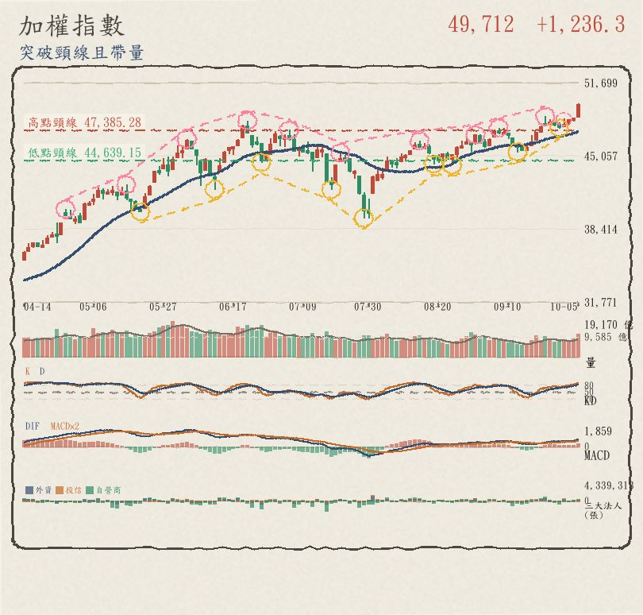
圖說：加權指數日 K（與個股圖相同標記）：黃圈＝轉折低點、粉圈＝轉折高點、虛線小圈＝還沒確認的轉折、藍線＝月線 MA20、水平虛線＝高點／低點頸線。最後一根是資料日當天。
本區塊為公開資料的技術面觀察，不構成投資建議，
不報牌、不預測、不下買賣決策。成交金額為集中市場總成交金額（含 ETF／權證），
與頁首摘要的「上市個股成交金額」口徑不同。標籤是統計，不是評分、也不是推薦。
上市 vs 上櫃（同期快篩）
加權 +2.55% vs 櫃買 +1.30%（同向） → 同向
（兩個市場分開寫，不合併成一個數字；櫃買為 TPEX 公開資料）
櫃買歷史：TPEX 逐日回補 130 根；來源：櫃買中心 www/zh-tw/indexInfo/sectinx（逐日，官方；OpenAPI tpex_index 只回當月）
（TPEX OpenAPI 只回當月，故逐日回補；歷史不足就不算該條均線並標「資料不足」，不用錯數字）
近 20 個交易日大盤狀態回溯（最新在上）（點開看逐日主狀態／量比／量價象限）
用同一支程式回算最近 20 個交易日（主狀態 S1~S8 與量比 20 皆為當日收盤當時的判定，
不是事後調整）；量比 20 未公布的日子寫「—」。
好條件最多的（前 10）
不好條件最多的（前 10）
好條件（8 項）：站上月線、月線向上、底底高、頭頭高、突破頸線、相對大盤強、攻擊量（量增＋上漲）、守住今日高檔（距今日高點 1% 內）。
不好條件（8 項）：跌破前低、今日下跌、相對大盤弱、在月線之下、量增下跌（出貨）、貼近今日低點（1% 內）、跌破昨日低點、月線下彎。
兩邊都是同一組日線資料＋盤中即時價算出來的「符合項目數」，只是把方向相反的條件分開數；
條件數不是評分或推薦，不構成投資建議。
盤中爆量（估量比 ≥ 1.5）（35 上市 23／上櫃 12）
今日疲弱（跌幅前 10）（10 上市 7／上櫃 3）
逐檔（70 檔，依盤中成交金額排序）
聯電 2303 上市
146 -6.5（-4.26%）
上升趨勢（底底高＋頭頭高） 盤中成交值 378.26 億・全榜第 1 名（上市第 1 名）・相對大盤 -4.36
好條件 3/8：月線向上、底底高、頭頭高
不好條件 6/8：跌破前低、今日下跌、相對大盤弱、在月線之下、量增下跌（出貨）、跌破昨日低點
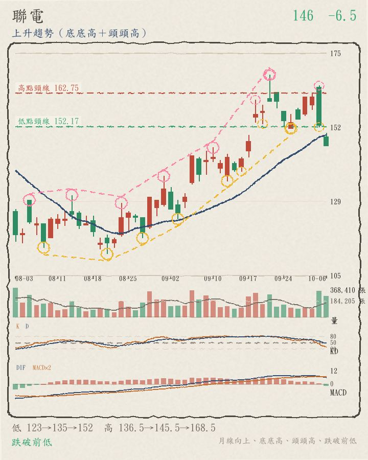
12:31 盤中 146（-4.26%），比加權指數弱 4.36 個百分點、跌破月線 148.775，離高點頸線 162.75 還差 10.3%，轉折結構仍是底底高＋頭頭高。
- 月線位置：現價 146 在月線 148.775 之下（-1.9%）；5 日線 156.7 也在月線之上（短均在上）；月線向上
- 量能：以已過交易時間推估，今天成交量約是 20 日均量的 1.91 倍（爆量），比 20 日均量大不少；下跌卻量增，量價背離
- 關鍵價位：已跌破前一個轉折低點；高點頸線 162.75 還在現價上方 10.3%；前一交易日高點 165（低於 11.5%）；今天盤中高點 150（低於 2.7%）；今天盤中低點 146（高於 0.0%）
- 轉折結構：低點 123、135、151.5 一路墊高、高點 136.5、145.5、168.5 也一路墊高，是底底高＋頭頭高；還沒確認的轉折低點 09-29 151.5、10-05 152；還沒確認的轉折高點 09-22 168.5、10-05 165（圖上虛線小圈）
聯發科 2454 上市
4940 -225.0（-4.36%）
高點墊高、底部不穩 盤中成交值 319.82 億・全榜第 2 名（上市第 2 名）・相對大盤 -4.46
好條件 3/8：站上月線、月線向上、頭頭高
不好條件 4/8：今日下跌、相對大盤弱、貼近今日低點（1% 內）、跌破昨日低點
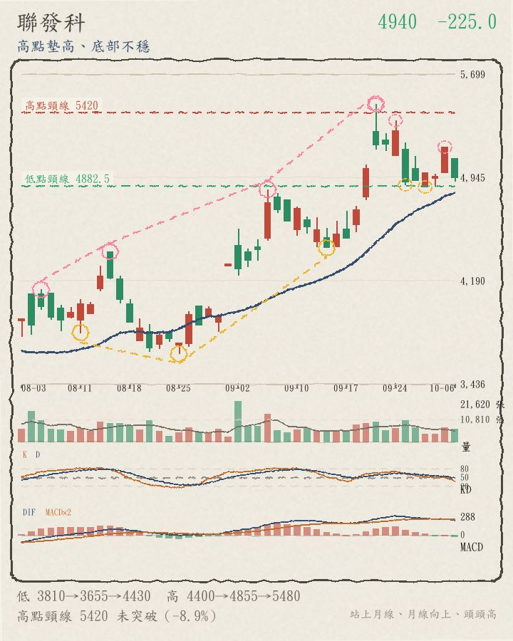
12:31 盤中 4940（-4.36%），比加權指數弱 4.46 個百分點、站上月線 4806.5，離高點頸線 5420 還差 8.9%，高點還在墊高（但底部沒同步墊高）。
- 月線位置：現價 4940 在月線 4806.5 之上（+2.8%）；5 日線 4985 也在月線之上（短均在上）；月線向上
- 量能：以已過交易時間推估，今天成交量約是 20 日均量的 1.13 倍（量增），比 20 日均量大一些；下跌卻量增，量價背離
- 關鍵價位：高點頸線 5420 還沒突破，差 8.9%；前一交易日高點 5165（低於 4.4%）；今天盤中高點 5085（低於 2.9%）；今天盤中低點 4915（高於 0.5%）
- 轉折結構：高點 4400、4855、5480 墊高（頭頭高），但低點 3810、3655、4430 沒有同步墊高；還沒確認的轉折低點 09-29 4890、10-01 4875；還沒確認的轉折高點 09-24 5360、10-05 5165（圖上虛線小圈）
台積電 2330 上市
2580 +5.0（+0.19%）
高點墊高、底部不穩 盤中成交值 305.99 億・全榜第 3 名（上市第 3 名）・相對大盤 +0.09
好條件 6/8：站上月線、月線向上、頭頭高、突破頸線、相對大盤強、守住今日高檔（距今日高點 1% 內）
不好條件 1/8：貼近今日低點（1% 內）
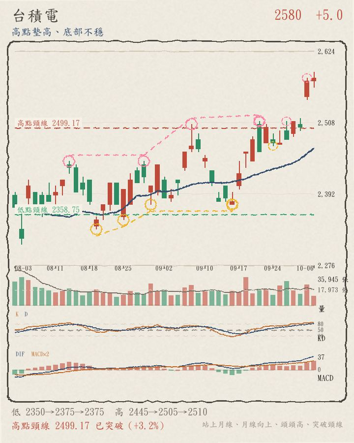
12:31 盤中 2580（+0.19%），比加權指數強 0.09 個百分點、站上月線 2457.5，已突破高點頸線 2499.17，高點還在墊高（但底部沒同步墊高）。
- 月線位置：現價 2580 在月線 2457.5 之上（+5.0%）；5 日線 2508 也在月線之上（短均在上）；月線向上
- 量能：以已過交易時間推估，今天成交量約是 20 日均量的 0.79 倍（量平），比 20 日均量少很多；上漲但量縮，量價背離
- 關鍵價位：高點頸線 2499.17 已站上；前一交易日高點 2580（高於 0.0%）；今天盤中高點 2590（低於 0.4%）；今天盤中低點 2565（高於 0.6%）
- 轉折結構：高點 2445、2505、2510 墊高（頭頭高），但低點 2350、2375、2375 沒有同步墊高；還沒確認的轉折低點 09-16 2375、09-24 2470；還沒確認的轉折高點 09-30 2510、10-05 2580（圖上虛線小圈）
南亞 1303 上市
295.5 +9.5（+3.32%）
高點墊高、底部不穩 盤中成交值 298.99 億・全榜第 4 名（上市第 4 名）・相對大盤 +3.22
好條件 6/8：站上月線、月線向上、頭頭高、突破頸線、相對大盤強、攻擊量（量增＋上漲）
不好條件 0/8：無
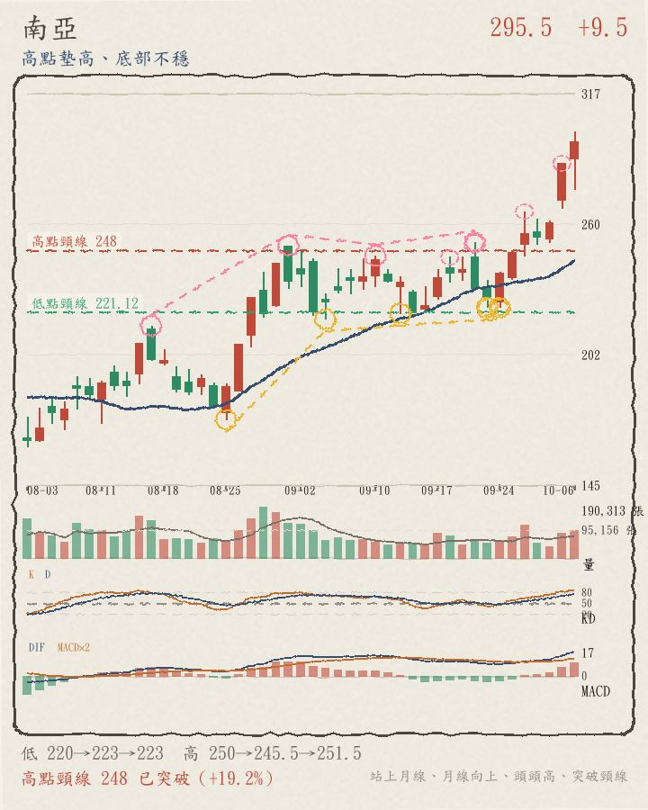
12:31 盤中 295.5（+3.32%），比加權指數強 3.22 個百分點、站上月線 239.925，已突破高點頸線 248，高點還在墊高（但底部沒同步墊高）。
- 月線位置：現價 295.5 在月線 239.925 之上（+23.2%）；5 日線 260.5 也在月線之上（短均在上）；月線向上
- 量能：以已過交易時間推估，今天成交量約是 20 日均量的 1.92 倍（爆量），比 20 日均量大不少；上漲又量增，量價配合
- 關鍵價位：高點頸線 248 已站上；前一交易日高點 286（高於 3.3%）；今天盤中高點 300（低於 1.5%）；今天盤中低點 274.5（高於 7.7%）
- 轉折結構：高點 250、245.5、251.5 墊高（頭頭高），但低點 220.5、223、223 沒有同步墊高；還沒確認的轉折低點 09-23 223、09-24 223；還沒確認的轉折高點 09-30 265、10-05 286（圖上虛線小圈）
台燿 6274 上櫃
1735 -45.0（-2.53%）
高點墊高、底部不穩 盤中成交值 257.07 億・全榜第 5 名（上櫃第 1 名）・相對大盤 -2.63
好條件 4/8：站上月線、月線向上、頭頭高、突破頸線
不好條件 3/8：今日下跌、相對大盤弱、量增下跌（出貨）
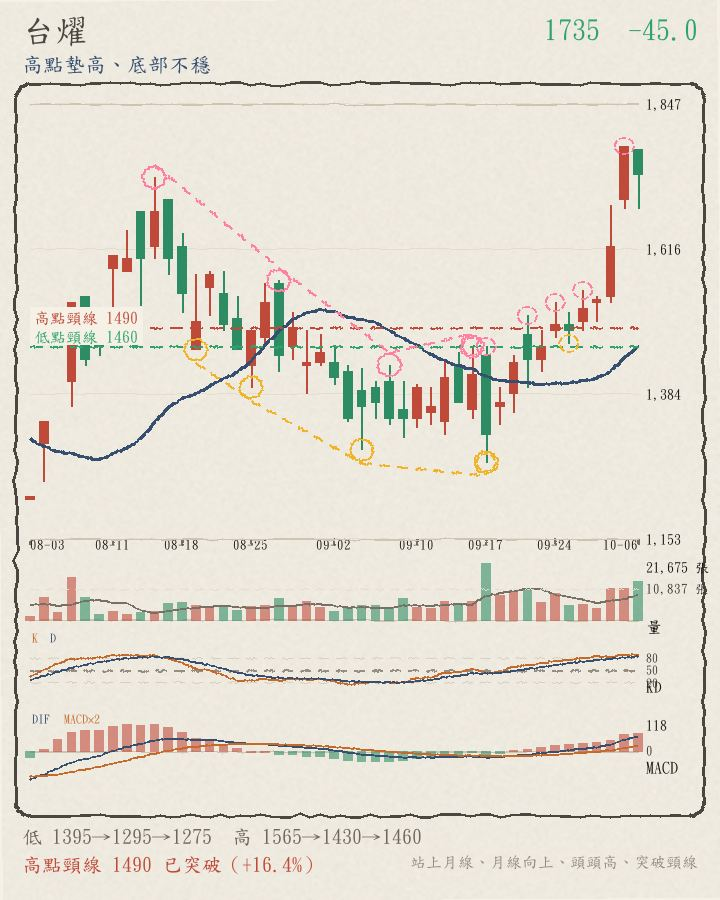
12:31 盤中 1735（-2.53%），比加權指數弱 2.63 個百分點、站上月線 1442，已突破高點頸線 1490，高點還在墊高（但底部沒同步墊高）。
- 月線位置：現價 1735 在月線 1442 之上（+20.3%）；5 日線 1588 也在月線之上（短均在上）；月線向上
- 量能：以已過交易時間推估，今天成交量約是 20 日均量的 2.42 倍（爆量），比 20 日均量大不少；下跌卻量增，量價背離
- 關鍵價位：高點頸線 1490 已站上；前一交易日高點 1780（低於 2.5%）；今天盤中高點 1775（低於 2.3%）；今天盤中低點 1680（高於 3.3%）
- 轉折結構：高點 1565、1430、1460 墊高（頭頭高），但低點 1395、1295、1275 沒有同步墊高；還沒確認的轉折低點 09-17 1275、09-29 1465；還沒確認的轉折高點 09-30 1550、10-05 1780（圖上虛線小圈）
台光電 2383 上市
5930 +230.0（+4.04%）
高點墊高、底部不穩 盤中成交值 246.98 億・全榜第 6 名（上市第 5 名）・相對大盤 +3.94
好條件 5/8：站上月線、頭頭高、突破頸線、相對大盤強、攻擊量（量增＋上漲）
不好條件 1/8：月線下彎
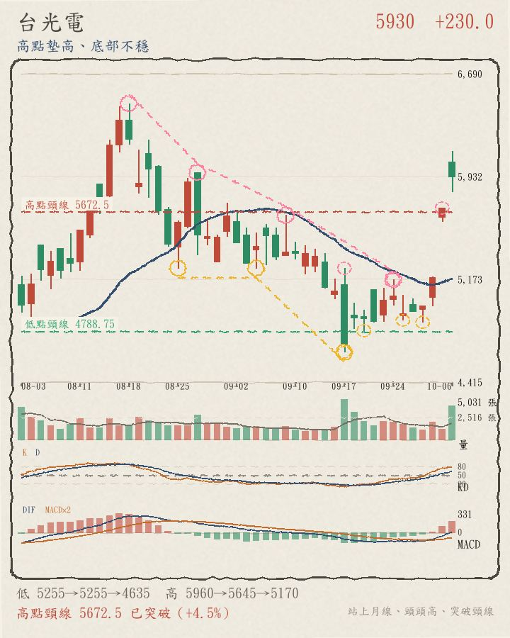
12:31 盤中 5930（+4.04%），比加權指數強 3.94 個百分點、站上月線 5151.75，已突破高點頸線 5672.5，高點還在墊高（但底部沒同步墊高）。
- 月線位置：現價 5930 在月線 5151.75 之上（+15.1%）；5 日線 5143 也在月線之下（短均在下）；月線向下
- 量能：以已過交易時間推估，今天成交量約是 20 日均量的 2.86 倍（爆量），比 20 日均量大不少；上漲又量增，量價配合
- 關鍵價位：高點頸線 5672.5 已站上；前一交易日高點 5700（高於 4.0%）；今天盤中高點 6115（低於 3.0%）；今天盤中低點 5820（高於 1.9%）
- 轉折結構：高點 5960、5645、5170 墊高（頭頭高），但低點 5255、5255、4635 沒有同步墊高；還沒確認的轉折低點 09-29 4870、10-01 4855；還沒確認的轉折高點 09-24 5170、10-05 5700（圖上虛線小圈）
金像電 2368 上市
1260 +45.0（+3.70%）
高點墊高、底部不穩 盤中成交值 240.81 億・全榜第 7 名（上市第 6 名）・相對大盤 +3.60
好條件 5/8：站上月線、頭頭高、突破頸線、相對大盤強、攻擊量（量增＋上漲）
不好條件 1/8：月線下彎
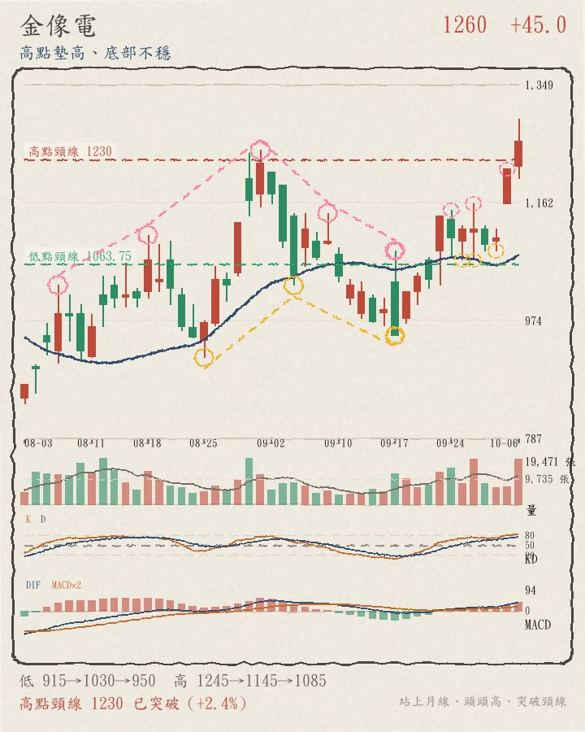
12:31 盤中 1260（+3.70%），比加權指數強 3.60 個百分點、站上月線 1067.7，已突破高點頸線 1230，高點還在墊高（但底部沒同步墊高）。
- 月線位置：現價 1260 在月線 1067.7 之上（+18.0%）；5 日線 1131 也在月線之上（短均在上）；月線向下
- 量能：以已過交易時間推估，今天成交量約是 20 日均量的 2.86 倍（爆量），比 20 日均量大不少；上漲又量增，量價配合
- 關鍵價位：高點頸線 1230 已站上；前一交易日高點 1215（高於 3.7%）；今天盤中高點 1295（低於 2.7%）；今天盤中低點 1200（高於 5.0%）
- 轉折結構：高點 1245、1145、1085 墊高（頭頭高），但低點 915、1030、950 沒有同步墊高；還沒確認的轉折低點 09-30 1070、10-02 1085；還沒確認的轉折高點 09-30 1160、10-05 1215（圖上虛線小圈）
聯茂 6213 上市
784 +33.0（+4.39%）
高點墊高、底部不穩 盤中成交值 226.7 億・全榜第 8 名（上市第 7 名）・相對大盤 +4.29
好條件 6/8：站上月線、月線向上、頭頭高、突破頸線、相對大盤強、攻擊量（量增＋上漲）
不好條件 0/8：無
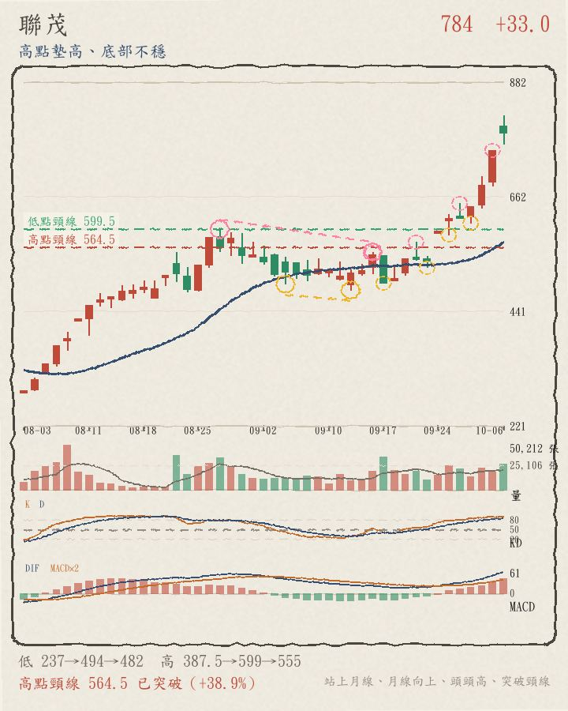
12:31 盤中 784（+4.39%），比加權指數強 4.29 個百分點、站上月線 560.75，已突破高點頸線 564.5，高點還在墊高（但底部沒同步墊高）。
- 月線位置：現價 784 在月線 560.75 之上（+39.8%）；5 日線 663.8 也在月線之上（短均在上）；月線向上
- 量能：以已過交易時間推估，今天成交量約是 20 日均量的 2.13 倍（爆量），比 20 日均量大不少；上漲又量增，量價配合
- 關鍵價位：高點頸線 564.5 已站上；前一交易日高點 751（高於 4.4%）；今天盤中高點 818（低於 4.2%）；今天盤中低點 762（高於 2.9%）
- 轉折結構：高點 387.5、599、555 墊高（頭頭高），但低點 237、493.5、482 沒有同步墊高；還沒確認的轉折低點 09-29 588、10-01 611；還沒確認的轉折高點 09-30 649、10-05 751（圖上虛線小圈）
台達電 2308 上市
2040 +35.0（+1.75%）
高點墊高、底部不穩 盤中成交值 226.01 億・全榜第 9 名（上市第 8 名）・相對大盤 +1.65
好條件 6/8：站上月線、月線向上、頭頭高、突破頸線、相對大盤強、攻擊量（量增＋上漲）
不好條件 0/8：無
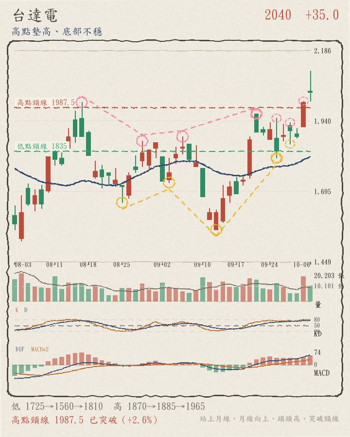
12:31 盤中 2040（+1.75%），比加權指數強 1.65 個百分點、站上月線 1804.75，已突破高點頸線 1987.5，高點還在墊高（但底部沒同步墊高）。
- 月線位置：現價 2040 在月線 1804.75 之上（+13.0%）；5 日線 1904 也在月線之上（短均在上）；月線向上
- 量能：以已過交易時間推估，今天成交量約是 20 日均量的 1.37 倍（量增），比 20 日均量大不少；上漲又量增，量價配合
- 關鍵價位：高點頸線 1987.5 已站上；前一交易日高點 2010（高於 1.5%）；今天盤中高點 2115（低於 3.5%）；今天盤中低點 2010（高於 1.5%）
- 轉折結構：高點 1870、1885、1965 墊高（頭頭高），但低點 1725、1560、1810 沒有同步墊高；還沒確認的轉折低點 09-29 1810、10-01 1860；還沒確認的轉折高點 10-01 1935、10-05 2010（圖上虛線小圈）
華通 2313 上市
253.5 +5.0（+2.01%）
上升趨勢（底底高＋頭頭高） 盤中成交值 217.09 億・全榜第 10 名（上市第 9 名）・相對大盤 +1.91
好條件 7/8：站上月線、底底高、頭頭高、突破頸線、相對大盤強、攻擊量（量增＋上漲）、守住今日高檔（距今日高點 1% 內）
不好條件 1/8：月線下彎
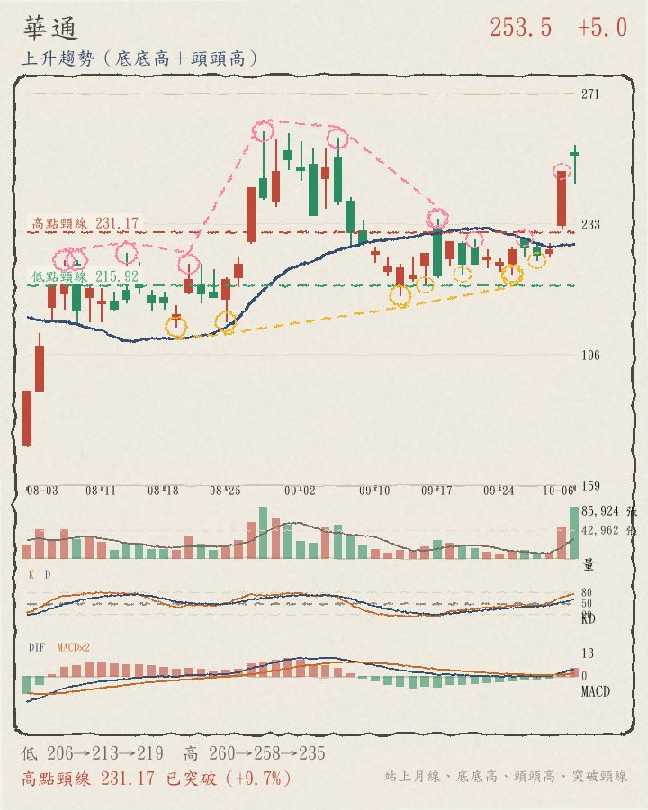
12:31 盤中 253.5（+2.01%），比加權指數強 1.91 個百分點、站上月線 227.45，已突破高點頸線 231.17，轉折結構仍是底底高＋頭頭高。
- 月線位置：現價 253.5 在月線 227.45 之上（+11.4%）；5 日線 230.3 也在月線之上（短均在上）；月線向下
- 量能：以已過交易時間推估，今天成交量約是 20 日均量的 5.42 倍（爆量），比 20 日均量大不少；上漲又量增，量價配合
- 關鍵價位：高點頸線 231.17 已站上；前一交易日高點 248.5（高於 2.0%）；今天盤中高點 256（低於 1.0%）；今天盤中低點 245（高於 3.5%）
- 轉折結構：低點 205.5、213、219 一路墊高、高點 260、258、235 也一路墊高，是底底高＋頭頭高；還沒確認的轉折低點 09-29 219、10-01 223；還沒確認的轉折高點 09-30 229.5、10-05 248.5（圖上虛線小圈）
鴻海 2317 上市
256 +2.0（+0.79%）
底部墊高、未過前高 盤中成交值 210.06 億・全榜第 11 名（上市第 10 名）・相對大盤 +0.69
好條件 6/8：站上月線、月線向上、底底高、突破頸線、相對大盤強、攻擊量（量增＋上漲）
不好條件 1/8：貼近今日低點（1% 內）
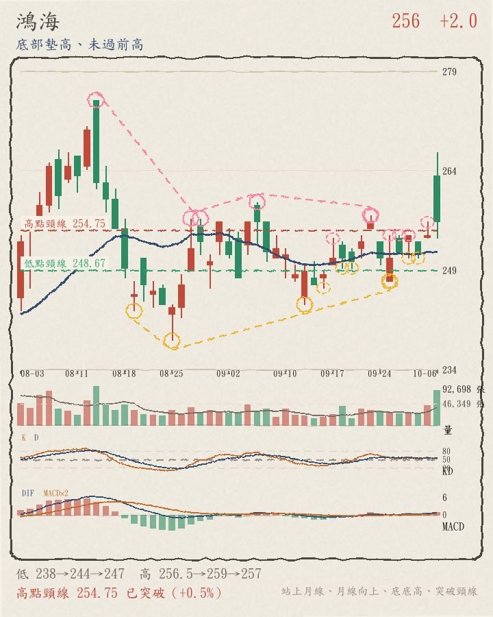
12:31 盤中 256（+0.79%），比加權指數強 0.69 個百分點、站上月線 251.45，已突破高點頸線 254.75，底部還在墊高（但高點沒同步創高）。
- 月線位置：現價 256 在月線 251.45 之上（+1.8%）；5 日線 252.2 也在月線之上（短均在上）；月線向上
- 量能：以已過交易時間推估，今天成交量約是 20 日均量的 3.56 倍（爆量），比 20 日均量大不少；上漲又量增，量價配合
- 關鍵價位：高點頸線 254.75 已站上；前一交易日高點 256（高於 0.0%）；今天盤中高點 266.5（低於 3.9%）；今天盤中低點 253.5（高於 1.0%）
- 轉折結構：低點 238、243.5、247 墊高（底底高），但高點 256.5、259、257 沒有同步創高；還沒確認的轉折低點 10-01 250.5、10-02 250.5；還沒確認的轉折高點 10-01 254、10-05 256（圖上虛線小圈）
臻鼎-KY 4958 上市
578 +2.0（+0.35%）
上升趨勢（底底高＋頭頭高） 盤中成交值 194.81 億・全榜第 12 名（上市第 11 名）・相對大盤 +0.25
好條件 7/8：站上月線、月線向上、底底高、頭頭高、突破頸線、相對大盤強、攻擊量（量增＋上漲）
不好條件 1/8：貼近今日低點（1% 內）
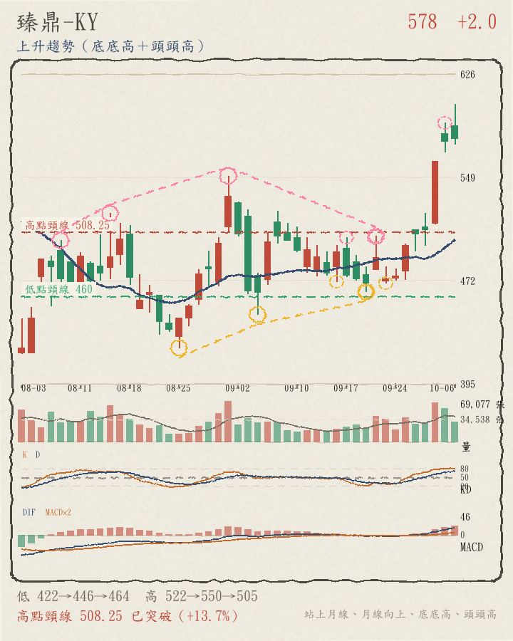
12:31 盤中 578（+0.35%），比加權指數強 0.25 個百分點、站上月線 496.5，已突破高點頸線 508.25，轉折結構仍是底底高＋頭頭高。
- 月線位置：現價 578 在月線 496.5 之上（+16.4%）；5 日線 530.5 也在月線之上（短均在上）；月線向上
- 量能：以已過交易時間推估，今天成交量約是 20 日均量的 1.45 倍（量增），比 20 日均量大不少；上漲又量增，量價配合
- 關鍵價位：高點頸線 508.25 已站上；前一交易日高點 590（低於 2.0%）；今天盤中高點 604（低於 4.3%）；今天盤中低點 574（高於 0.7%）
- 轉折結構：低點 421.5、446.5、463.5 一路墊高、高點 522、550、505 也一路墊高，是底底高＋頭頭高；還沒確認的轉折低點 09-21 463.5、09-23 470；還沒確認的轉折高點 09-22 505、10-05 590（圖上虛線小圈）
華新科 2492 上市
392 +23.5（+6.38%）
上升趨勢（底底高＋頭頭高） 盤中成交值 181.08 億・全榜第 13 名（上市第 12 名）・相對大盤 +6.28
好條件 8/8：站上月線、月線向上、底底高、頭頭高、突破頸線、相對大盤強、攻擊量（量增＋上漲）、守住今日高檔（距今日高點 1% 內）
不好條件 0/8：無
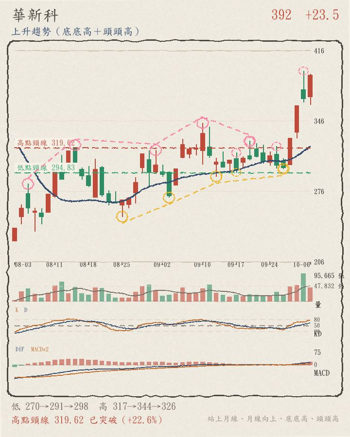
12:31 盤中 392（+6.38%），比加權指數強 6.28 個百分點、站上月線 316.1，已突破高點頸線 319.62，轉折結構仍是底底高＋頭頭高。
- 月線位置：現價 392 在月線 316.1 之上（+24.0%）；5 日線 332.1 也在月線之上（短均在上）；月線向上
- 量能：以已過交易時間推估，今天成交量約是 20 日均量的 2.05 倍（爆量），比 20 日均量大不少；上漲又量增，量價配合
- 關鍵價位：高點頸線 319.62 已站上；前一交易日高點 396（低於 1.0%）；今天盤中高點 393（低於 0.3%）；今天盤中低點 362.5（高於 8.1%）
- 轉折結構：低點 270、291、298.5 一路墊高、高點 317、344、326 也一路墊高，是底底高＋頭頭高；還沒確認的轉折低點 09-17 295、09-30 298.5；還沒確認的轉折高點 09-29 321、10-05 396（圖上虛線小圈）
友達 2409 上市
37.35 -1.7（-4.35%）
高點墊高、底部不穩 盤中成交值 146.09 億・全榜第 14 名（上市第 13 名）・相對大盤 -4.45
好條件 4/8：站上月線、月線向上、頭頭高、突破頸線
不好條件 4/8：今日下跌、相對大盤弱、貼近今日低點（1% 內）、跌破昨日低點
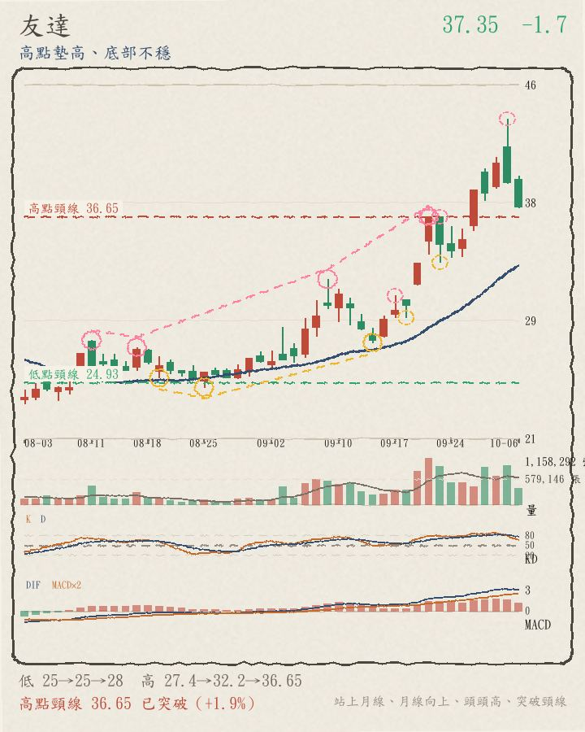
12:31 盤中 37.35（-4.35%），比加權指數弱 4.45 個百分點、站上月線 32.683，已突破高點頸線 36.65，高點還在墊高（但底部沒同步墊高）。
- 月線位置：現價 37.35 在月線 32.683 之上（+14.3%）；5 日線 38.28 也在月線之上（短均在上）；月線向上
- 量能：以已過交易時間推估，今天成交量約是 20 日均量的 0.91 倍（量平），比 20 日均量少一些
- 關鍵價位：高點頸線 36.65 已站上；前一交易日高點 43.55（低於 14.2%）；今天盤中高點 39.5（低於 5.4%）；今天盤中低點 37.25（高於 0.3%）
- 轉折結構：高點 27.4、32.2、36.65 墊高（頭頭高），但低點 25.25、24.6、27.75 沒有同步墊高；還沒確認的轉折低點 09-18 29.5、09-23 33.4；還沒確認的轉折高點 09-23 36.65、10-05 43.55（圖上虛線小圈）
環球晶 6488 上櫃
1215 +35.0（+2.97%）
高點墊高、底部不穩 盤中成交值 145.12 億・全榜第 15 名（上櫃第 2 名）・相對大盤 +2.87
好條件 6/8：站上月線、月線向上、頭頭高、突破頸線、相對大盤強、攻擊量（量增＋上漲）
不好條件 0/8：無
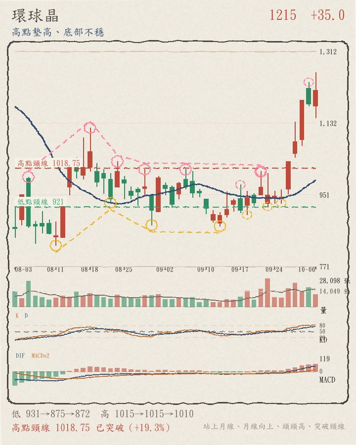
12:31 盤中 1215（+2.97%），比加權指數強 2.87 個百分點、站上月線 976.15，已突破高點頸線 1018.75，高點還在墊高（但底部沒同步墊高）。
- 月線位置：現價 1215 在月線 976.15 之上（+24.5%）；5 日線 1087 也在月線之上（短均在上）；月線向上
- 量能：以已過交易時間推估，今天成交量約是 20 日均量的 1.39 倍（量增），比 20 日均量大不少；上漲又量增，量價配合
- 關鍵價位：高點頸線 1018.75 已站上；前一交易日高點 1235（低於 1.6%）；今天盤中高點 1260（低於 3.6%）；今天盤中低點 1145（高於 6.1%）
- 轉折結構：高點 1015、1015、1010 墊高（頭頭高），但低點 931、875、872 沒有同步墊高；還沒確認的轉折低點 09-23 922、09-29 930；還沒確認的轉折高點 09-22 1010、10-05 1235（圖上虛線小圈）
國巨* 2327 上市
624 -2.0（-0.32%）
高點墊高、底部不穩 盤中成交值 142.66 億・全榜第 16 名（上市第 14 名）・相對大盤 -0.42
好條件 3/8：站上月線、月線向上、頭頭高
不好條件 3/8：今日下跌、相對大盤弱、跌破昨日低點
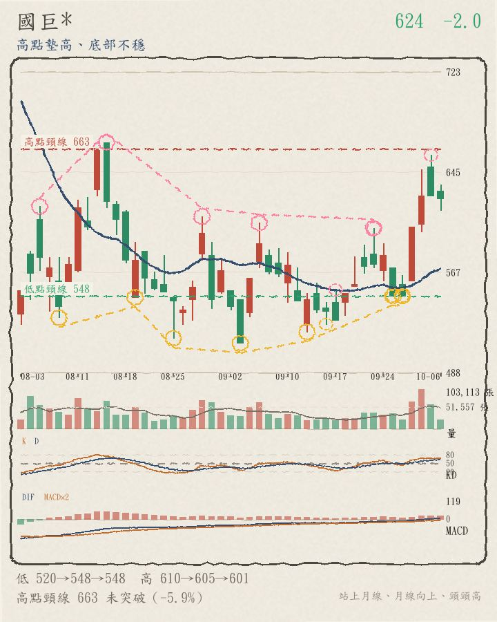
12:31 盤中 624（-0.32%），比加權指數弱 0.42 個百分點、站上月線 566.35，離高點頸線 663 還差 5.9%，高點還在墊高（但底部沒同步墊高）。
- 月線位置：現價 624 在月線 566.35 之上（+10.2%）；5 日線 590 也在月線之上（短均在上）；月線向上
- 量能：以已過交易時間推估，今天成交量約是 20 日均量的 0.75 倍（量平），比 20 日均量少很多
- 關鍵價位：高點頸線 663 還沒突破，差 5.9%；前一交易日高點 658（低於 5.2%）；今天盤中高點 635（低於 1.7%）；今天盤中低點 615（高於 1.5%）
- 轉折結構：高點 610、605、601 墊高（頭頭高），但低點 520、548、548 沒有同步墊高；還沒確認的轉折低點 09-29 548、09-30 548；還沒確認的轉折高點 09-23 601、10-05 658（圖上虛線小圈）
創意 3443 上市
8465 -135.0（-1.57%）
上升趨勢（底底高＋頭頭高） 盤中成交值 131.55 億・全榜第 17 名（上市第 15 名）・相對大盤 -1.67
好條件 4/8：站上月線、月線向上、底底高、頭頭高
不好條件 3/8：今日下跌、相對大盤弱、量增下跌（出貨）
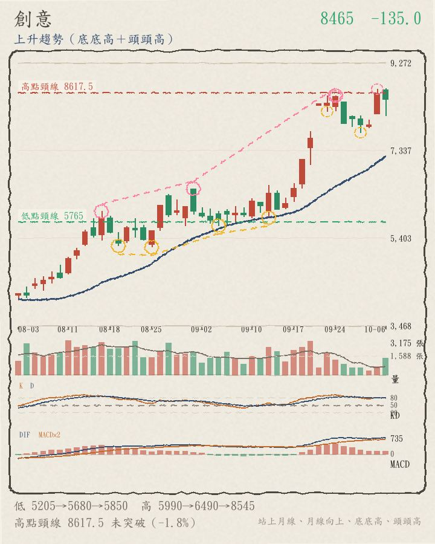
12:31 盤中 8465（-1.57%），比加權指數弱 1.67 個百分點、站上月線 7074.75，離高點頸線 8617.5 還差 1.8%，轉折結構仍是底底高＋頭頭高。
- 月線位置：現價 8465 在月線 7074.75 之上（+19.6%）；5 日線 8073 也在月線之上（短均在上）；月線向上
- 量能：以已過交易時間推估，今天成交量約是 20 日均量的 1.28 倍（量增），比 20 日均量大不少；下跌卻量增，量價背離
- 關鍵價位：高點頸線 8617.5 還沒突破，差 1.8%；前一交易日高點 8690（低於 2.6%）；今天盤中高點 8710（低於 2.8%）；今天盤中低點 8110（高於 4.4%）
- 轉折結構：低點 5205、5680、5850 一路墊高、高點 5990、6490、8545 也一路墊高，是底底高＋頭頭高；還沒確認的轉折低點 09-23 8200、10-01 7730；還沒確認的轉折高點 09-24 8545、10-05 8690（圖上虛線小圈）
世芯-KY 3661 上市
4165 +215.0（+5.44%）
高點墊高、底部不穩 盤中成交值 129.82 億・全榜第 18 名（上市第 16 名）・相對大盤 +5.34
好條件 5/8：站上月線、頭頭高、突破頸線、相對大盤強、攻擊量（量增＋上漲）
不好條件 1/8：月線下彎
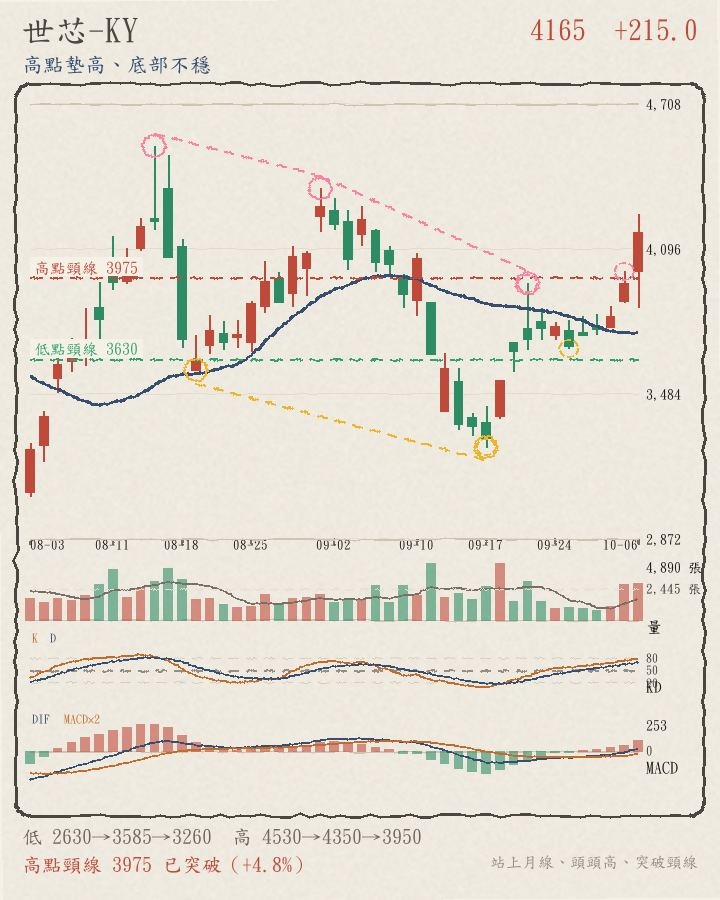
12:31 盤中 4165（+5.44%），比加權指數強 5.34 個百分點、站上月線 3744.25，已突破高點頸線 3975，高點還在墊高（但底部沒同步墊高）。
- 月線位置：現價 4165 在月線 3744.25 之上（+11.2%）；5 日線 3790 也在月線之上（短均在上）；月線向下
- 量能：以已過交易時間推估，今天成交量約是 20 日均量的 1.85 倍（爆量），比 20 日均量大不少；上漲又量增，量價配合
- 關鍵價位：高點頸線 3975 已站上；前一交易日高點 4000（高於 4.1%）；今天盤中高點 4240（低於 1.8%）；今天盤中低點 3850（高於 8.2%）
- 轉折結構：高點 4530、4350、3950 墊高（頭頭高），但低點 2630、3585、3260 沒有同步墊高；還沒確認的轉折低點 09-17 3260、09-29 3675；還沒確認的轉折高點 09-22 3950、10-05 4000（圖上虛線小圈）
欣興 3037 上市
1295 -30.0（-2.26%）
高點墊高、底部不穩 盤中成交值 127 億・全榜第 19 名（上市第 17 名）・相對大盤 -2.36
好條件 4/8：站上月線、月線向上、頭頭高、突破頸線
不好條件 4/8：今日下跌、相對大盤弱、貼近今日低點（1% 內）、跌破昨日低點
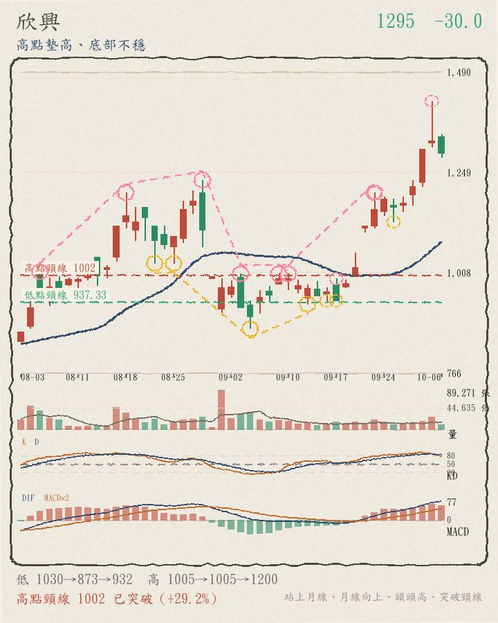
12:31 盤中 1295（-2.26%），比加權指數弱 2.36 個百分點、站上月線 1062.1，已突破高點頸線 1002，高點還在墊高（但底部沒同步墊高）。
- 月線位置：現價 1295 在月線 1062.1 之上（+21.9%）；5 日線 1237 也在月線之上（短均在上）；月線向上
- 量能：以已過交易時間推估，今天成交量約是 20 日均量的 0.74 倍（量平），比 20 日均量少很多
- 關鍵價位：高點頸線 1002 已站上；前一交易日高點 1420（低於 8.8%）；今天盤中高點 1340（低於 3.4%）；今天盤中低點 1285（高於 0.8%）
- 轉折結構：高點 1005、1005、1200 墊高（頭頭高），但低點 1030、873、932 沒有同步墊高；還沒確認的轉折低點 09-17 940、09-29 1130；還沒確認的轉折高點 09-23 1200、10-05 1420（圖上虛線小圈）
南亞科 2408 上市
527 -3.0（-0.57%）
高點墊高、底部不穩 盤中成交值 117.66 億・全榜第 20 名（上市第 18 名）・相對大盤 -0.67
好條件 3/8：站上月線、月線向上、頭頭高
不好條件 2/8：今日下跌、相對大盤弱
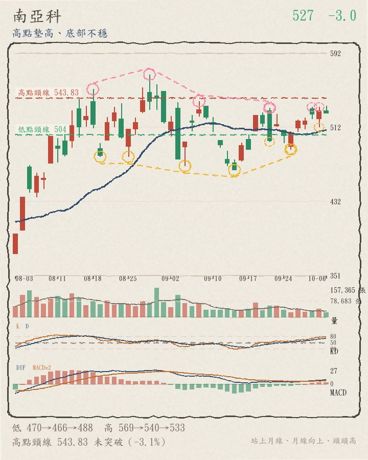
12:31 盤中 527（-0.57%），比加權指數弱 0.67 個百分點、站上月線 507.5，離高點頸線 543.83 還差 3.1%，高點還在墊高（但底部沒同步墊高）。
- 月線位置：現價 527 在月線 507.5 之上（+3.8%）；5 日線 520 也在月線之上（短均在上）；月線向上
- 量能：以已過交易時間推估，今天成交量約是 20 日均量的 0.58 倍（量縮），比 20 日均量少很多
- 關鍵價位：高點頸線 543.83 還沒突破，差 3.1%；前一交易日高點 534（低於 1.3%）；今天盤中高點 535（低於 1.5%）；今天盤中低點 527（高於 0.0%）
- 轉折結構：高點 569、540、533 墊高（頭頭高），但低點 470、465.5、488 沒有同步墊高；還沒確認的轉折低點 09-29 488、10-05 512；還沒確認的轉折高點 10-02 534、10-05 534（圖上虛線小圈）
金居 8358 上櫃
560 -10.0（-1.75%）
上升趨勢（底底高＋頭頭高） 盤中成交值 117.64 億・全榜第 21 名（上櫃第 3 名）・相對大盤 -1.85
好條件 4/8：站上月線、月線向上、底底高、頭頭高
不好條件 3/8：今日下跌、相對大盤弱、量增下跌（出貨）
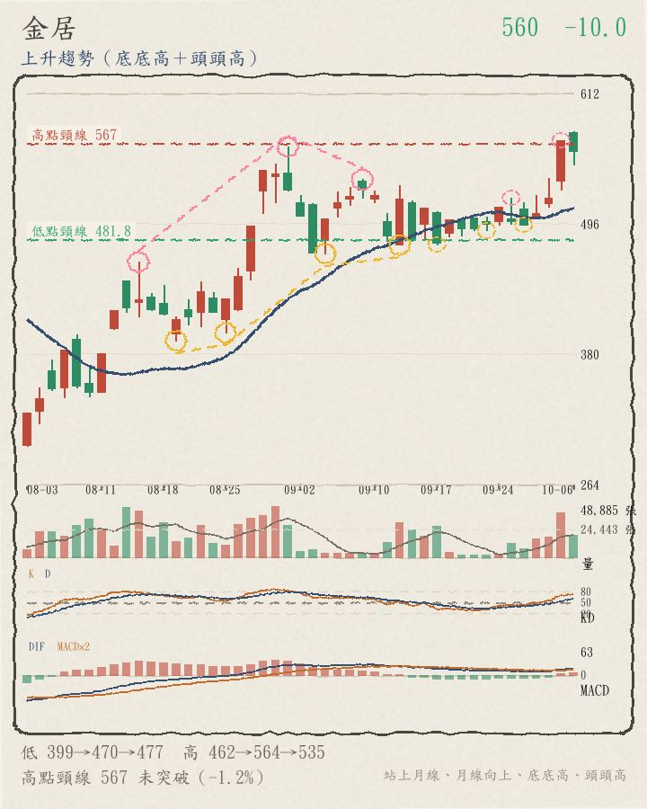
12:31 盤中 560（-1.75%），比加權指數弱 1.85 個百分點、站上月線 506.65，離高點頸線 567 還差 1.2%，轉折結構仍是底底高＋頭頭高。
- 月線位置：現價 560 在月線 506.65 之上（+10.5%）；5 日線 517.4 也在月線之上（短均在上）；月線向上
- 量能：以已過交易時間推估，今天成交量約是 20 日均量的 2.44 倍（爆量），比 20 日均量大不少；下跌卻量增，量價背離
- 關鍵價位：高點頸線 567 還沒突破，差 1.2%；前一交易日高點 570（低於 1.8%）；今天盤中高點 578（低於 3.1%）；今天盤中低點 548（高於 2.2%）
- 轉折結構：低點 399、469.5、477 一路墊高、高點 462、564、535 也一路墊高，是底底高＋頭頭高；還沒確認的轉折低點 09-23 490、09-30 495；還沒確認的轉折高點 09-29 519、10-05 570（圖上虛線小圈）
大立光 3008 上市
6845 +115.0（+1.71%）
高點墊高、底部不穩 盤中成交值 100.96 億・全榜第 22 名（上市第 19 名）・相對大盤 +1.61
好條件 5/8：站上月線、頭頭高、突破頸線、相對大盤強、守住今日高檔（距今日高點 1% 內）
不好條件 1/8：月線下彎
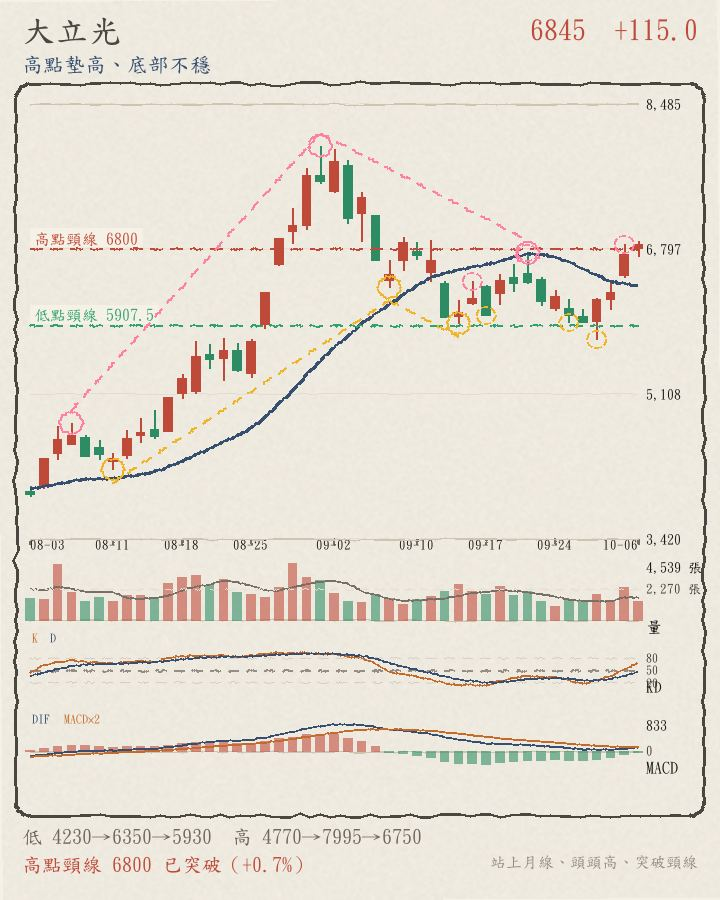
12:31 盤中 6845（+1.71%），比加權指數強 1.61 個百分點、站上月線 6398.25，已突破高點頸線 6800，高點還在墊高（但底部沒同步墊高）。
- 月線位置：現價 6845 在月線 6398.25 之上（+7.0%）；5 日線 6238 也在月線之下（短均在下）；月線向下
- 量能：以已過交易時間推估，今天成交量約是 20 日均量的 1.03 倍（量平），跟 20 日均量差不多
- 關鍵價位：高點頸線 6800 已站上；前一交易日高點 6850（低於 0.1%）；今天盤中高點 6880（低於 0.5%）；今天盤中低點 6705（高於 2.1%）
- 轉折結構：高點 4770、7995、6750 墊高（頭頭高），但低點 4230、6350、5930 沒有同步墊高；還沒確認的轉折低點 09-29 5940、10-01 5740；還沒確認的轉折高點 09-22 6750、10-05 6850（圖上虛線小圈）
矽格 6257 上市
286 +26.0（+10.00%）
高點墊高、底部不穩 盤中成交值 94.45 億・全榜第 23 名（上市第 20 名）・相對大盤 +9.90
好條件 6/8：站上月線、月線向上、頭頭高、突破頸線、相對大盤強、攻擊量（量增＋上漲）
不好條件 0/8：無
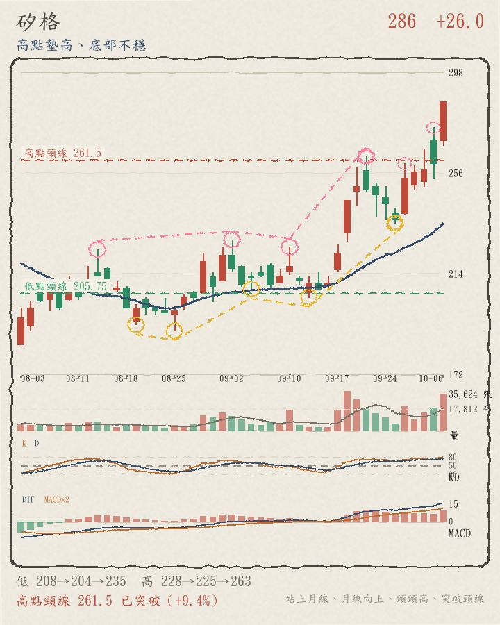
12:31 盤中 286（+10.00%），比加權指數強 9.90 個百分點、站上月線 231.2，已突破高點頸線 261.5，高點還在墊高（但底部沒同步墊高）。
- 月線位置：現價 286 在月線 231.2 之上（+23.7%）；5 日線 252.9 也在月線之上（短均在上）；月線向上
- 量能：以已過交易時間推估，今天成交量約是 20 日均量的 3.45 倍（爆量），比 20 日均量大不少；上漲又量增，量價配合
- 關鍵價位：高點頸線 261.5 已站上；前一交易日高點 275（高於 4.0%）；今天盤中高點 286（高於 0.0%）；今天盤中低點 267.5（高於 6.9%）
- 轉折結構：高點 228、225、263 墊高（頭頭高），但低點 207.5、204、235 沒有同步墊高；還沒確認的轉折低點 09-29 235；還沒確認的轉折高點 09-30 260、10-05 275（圖上虛線小圈）
貿聯-KY 3665 上市
2270 -215.0（-8.65%）
高點墊高、底部不穩 盤中成交值 92.57 億・全榜第 24 名（上市第 21 名）・相對大盤 -8.75
好條件 3/8：站上月線、月線向上、頭頭高
不好條件 5/8：今日下跌、相對大盤弱、量增下跌（出貨）、貼近今日低點（1% 內）、跌破昨日低點
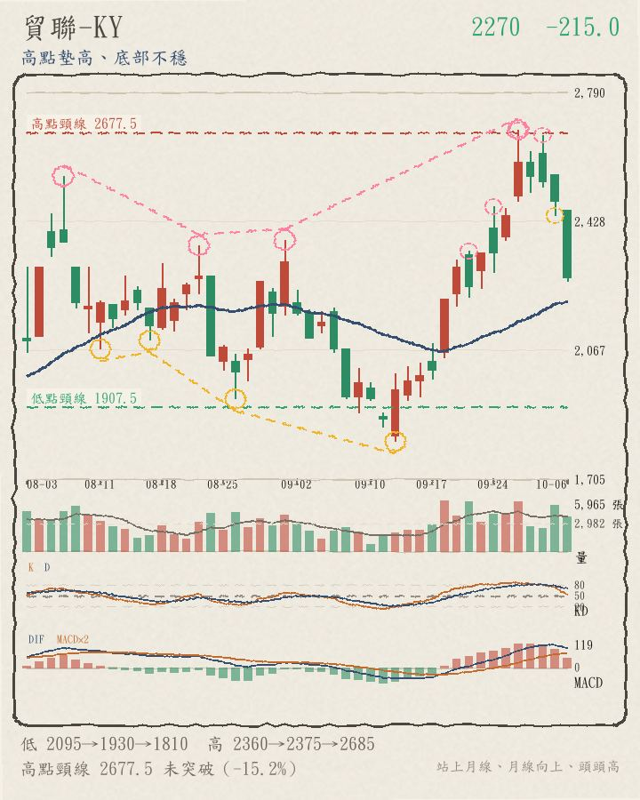
12:31 盤中 2270（-8.65%），比加權指數弱 8.75 個百分點、站上月線 2196.25，離高點頸線 2677.5 還差 15.2%，高點還在墊高（但底部沒同步墊高）。
- 月線位置：現價 2270 在月線 2196.25 之上（+3.4%）；5 日線 2524 也在月線之上（短均在上）；月線向上
- 量能：以已過交易時間推估，今天成交量約是 20 日均量的 1.65 倍（爆量），比 20 日均量大不少；下跌卻量增，量價背離
- 關鍵價位：高點頸線 2677.5 還沒突破，差 15.2%；前一交易日高點 2560（低於 11.3%）；今天盤中高點 2460（低於 7.7%）；今天盤中低點 2260（高於 0.4%）
- 轉折結構：高點 2360、2375、2685 墊高（頭頭高），但低點 2095、1930、1810 沒有同步墊高；還沒確認的轉折低點 10-05 2445；還沒確認的轉折高點 09-30 2685、10-02 2670（圖上虛線小圈）
緯穎 6669 上市
2275 +125.0（+5.81%）
高點墊高、底部不穩 盤中成交值 91.59 億・全榜第 25 名（上市第 22 名）・相對大盤 +5.71
好條件 5/8：站上月線、頭頭高、突破頸線、相對大盤強、攻擊量（量增＋上漲）
不好條件 1/8：月線下彎
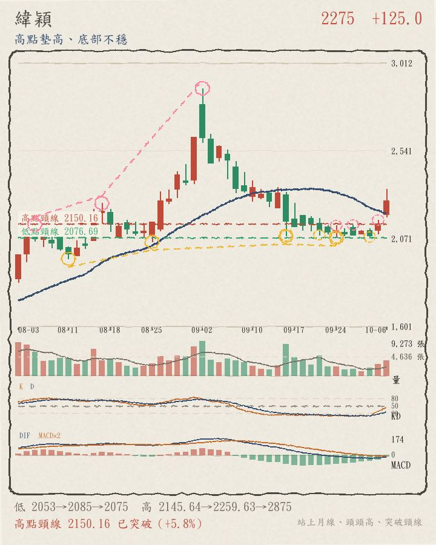
12:31 盤中 2275（+5.81%），比加權指數強 5.71 個百分點、站上月線 2221，已突破高點頸線 2150.16，高點還在墊高（但底部沒同步墊高）。
- 月線位置：現價 2275 在月線 2221 之上（+2.4%）；5 日線 2107 也在月線之下（短均在下）；月線向下
- 量能：以已過交易時間推估，今天成交量約是 20 日均量的 1.61 倍（爆量），比 20 日均量大不少；上漲又量增，量價配合
- 關鍵價位：高點頸線 2150.16 已站上；前一交易日高點 2170（高於 4.8%）；今天盤中高點 2335（低於 2.6%）；今天盤中低點 2185（高於 4.1%）
- 轉折結構：高點 2145.64、2259.63、2875 墊高（頭頭高），但低點 2053.44、2085、2075 沒有同步墊高；還沒確認的轉折低點 09-24 2075、10-02 2080；還沒確認的轉折高點 09-30 2145、10-05 2170（圖上虛線小圈）
精材 3374 上櫃
491.5 -7.0（-1.40%）
上升趨勢（底底高＋頭頭高） 盤中成交值 91.31 億・全榜第 26 名（上櫃第 4 名）・相對大盤 -1.50
好條件 4/8：站上月線、月線向上、底底高、頭頭高
不好條件 3/8：今日下跌、相對大盤弱、量增下跌（出貨）

12:31 盤中 491.5（-1.40%），比加權指數弱 1.50 個百分點、站上月線 456.125，離高點頸線 496 還差 0.9%，轉折結構仍是底底高＋頭頭高。
- 月線位置：現價 491.5 在月線 456.125 之上（+7.8%）；5 日線 466.3 也在月線之上（短均在上）；月線向上
- 量能：以已過交易時間推估，今天成交量約是 20 日均量的 2.86 倍（爆量），比 20 日均量大不少；下跌卻量增，量價背離
- 關鍵價位：高點頸線 496 還沒突破，差 0.9%；前一交易日高點 505（低於 2.7%）；今天盤中高點 530（低於 7.3%）；今天盤中低點 481（高於 2.2%）
- 轉折結構：低點 289、407、436.5 一路墊高、高點 431、496、487 也一路墊高，是底底高＋頭頭高；還沒確認的轉折低點 09-29 436.5、10-01 450；還沒確認的轉折高點 09-30 462、10-05 505（圖上虛線小圈）
南電 8046 上市
1510 +15.0（+1.00%）
上升趨勢（底底高＋頭頭高） 盤中成交值 91.17 億・全榜第 27 名（上市第 23 名）・相對大盤 +0.90
好條件 7/8：站上月線、月線向上、底底高、頭頭高、突破頸線、相對大盤強、守住今日高檔（距今日高點 1% 內）
不好條件 0/8：無
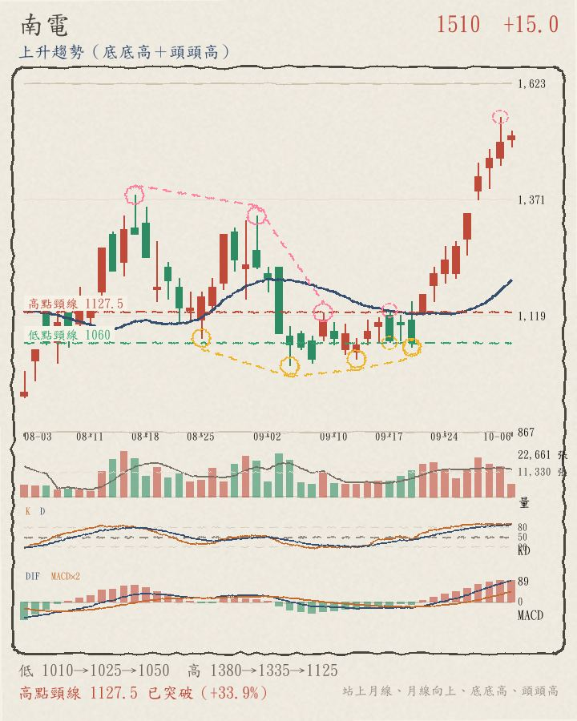
12:31 盤中 1510（+1.00%），比加權指數強 0.90 個百分點、站上月線 1173，已突破高點頸線 1127.5，轉折結構仍是底底高＋頭頭高。
- 月線位置：現價 1510 在月線 1173 之上（+28.7%）；5 日線 1397 也在月線之上（短均在上）；月線向上
- 量能：以已過交易時間推估，今天成交量約是 20 日均量的 0.66 倍（量縮），比 20 日均量少很多；上漲但量縮，量價背離
- 關鍵價位：高點頸線 1127.5 已站上；前一交易日高點 1550（低於 2.6%）；今天盤中高點 1520（低於 0.7%）；今天盤中低點 1485（高於 1.7%）
- 轉折結構：低點 1010、1025、1050 一路墊高、高點 1380、1335、1125 也一路墊高，是底底高＋頭頭高；還沒確認的轉折低點 09-17 1060、09-21 1050；還沒確認的轉折高點 09-17 1130、10-05 1550（圖上虛線小圈）
穩懋 3105 上櫃
594 -21.0（-3.41%）
高點墊高、底部不穩 盤中成交值 89.75 億・全榜第 28 名（上櫃第 5 名）・相對大盤 -3.51
好條件 4/8：站上月線、月線向上、頭頭高、突破頸線
不好條件 3/8：今日下跌、相對大盤弱、跌破昨日低點
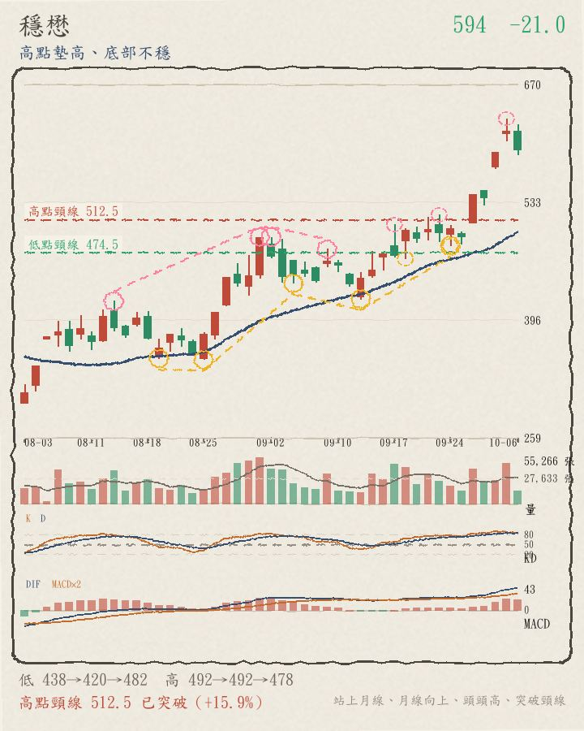
12:31 盤中 594（-3.41%），比加權指數弱 3.51 個百分點、站上月線 490.775，已突破高點頸線 512.5，高點還在墊高（但底部沒同步墊高）。
- 月線位置：現價 594 在月線 490.775 之上（+21.0%）；5 日線 555.8 也在月線之上（短均在上）；月線向上
- 量能：以已過交易時間推估，今天成交量約是 20 日均量的 0.70 倍（量縮），比 20 日均量少很多
- 關鍵價位：高點頸線 512.5 已站上；前一交易日高點 630（低於 5.7%）；今天盤中高點 623（低於 4.7%）；今天盤中低點 588（高於 1.0%）
- 轉折結構：高點 492、492、478 墊高（頭頭高），但低點 438.5、420、482 沒有同步墊高；還沒確認的轉折低點 09-18 467、09-24 482；還沒確認的轉折高點 09-23 518、10-05 630（圖上虛線小圈）
奇鋐 3017 上市
3670 +85.0（+2.37%）
高點墊高、底部不穩 盤中成交值 86.8 億・全榜第 29 名（上市第 24 名）・相對大盤 +2.27
好條件 6/8：站上月線、月線向上、頭頭高、突破頸線、相對大盤強、守住今日高檔（距今日高點 1% 內）
不好條件 0/8：無
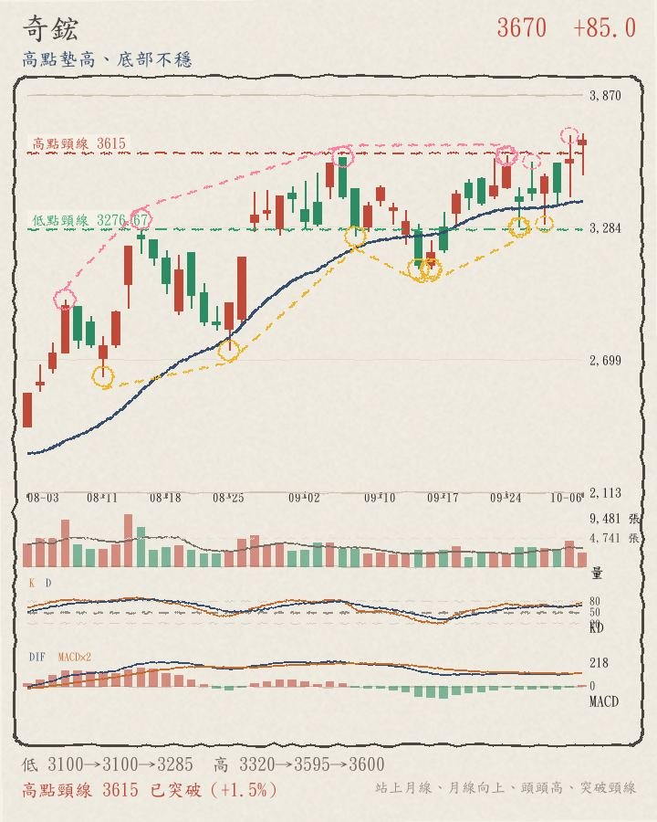
12:31 盤中 3670（+2.37%），比加權指數強 2.27 個百分點、站上月線 3395，已突破高點頸線 3615，高點還在墊高（但底部沒同步墊高）。
- 月線位置：現價 3670 在月線 3395 之上（+8.1%）；5 日線 3474 也在月線之上（短均在上）；月線向上
- 量能：以已過交易時間推估，今天成交量約是 20 日均量的 1.06 倍（量平），比 20 日均量大一些
- 關鍵價位：高點頸線 3615 已站上；前一交易日高點 3690（低於 0.5%）；今天盤中高點 3700（低於 0.8%）；今天盤中低點 3515（高於 4.4%）
- 轉折結構：高點 3320、3595、3600 墊高（頭頭高），但低點 3100、3100、3285 沒有同步墊高；還沒確認的轉折低點 09-29 3285、10-01 3300；還沒確認的轉折高點 09-30 3575、10-05 3690（圖上虛線小圈）
南茂 8150 上市
129.5 +5.5（+4.44%）
高點墊高、底部不穩 盤中成交值 85.56 億・全榜第 30 名（上市第 25 名）・相對大盤 +4.34
好條件 7/8：站上月線、月線向上、頭頭高、突破頸線、相對大盤強、攻擊量（量增＋上漲）、守住今日高檔（距今日高點 1% 內）
不好條件 0/8：無
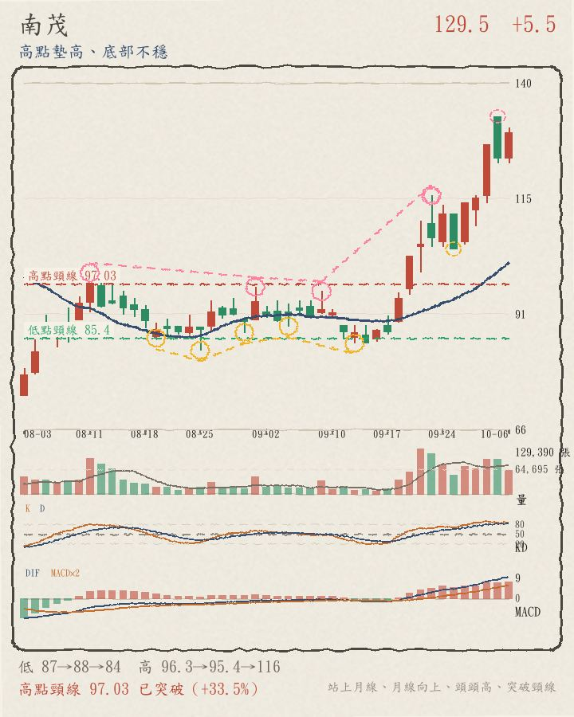
12:31 盤中 129.5（+4.44%），比加權指數強 4.34 個百分點、站上月線 99.63，已突破高點頸線 97.03，高點還在墊高（但底部沒同步墊高）。
- 月線位置：現價 129.5 在月線 99.63 之上（+30.0%）；5 日線 117.1 也在月線之上（短均在上）；月線向上
- 量能：以已過交易時間推估，今天成交量約是 20 日均量的 1.84 倍（爆量），比 20 日均量大不少；上漲又量增，量價配合
- 關鍵價位：高點頸線 97.03 已站上；前一交易日高點 133（低於 2.6%）；今天盤中高點 130.5（低於 0.8%）；今天盤中低點 123（高於 5.3%）
- 轉折結構：高點 96.3、95.4、116 墊高（頭頭高），但低點 86.6、87.9、84.3 沒有同步墊高；還沒確認的轉折低點 09-29 104.5；還沒確認的轉折高點 09-23 116、10-05 133（圖上虛線小圈）
景碩 3189 上市
1070 -25.0（-2.28%）
高點墊高、底部不穩 盤中成交值 83.57 億・全榜第 31 名（上市第 26 名）・相對大盤 -2.38
好條件 4/8：站上月線、月線向上、頭頭高、突破頸線
不好條件 2/8：今日下跌、相對大盤弱
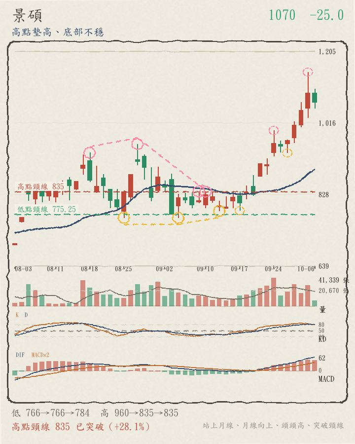
12:31 盤中 1070（-2.28%），比加權指數弱 2.38 個百分點、站上月線 881.35，已突破高點頸線 835，高點還在墊高（但底部沒同步墊高）。
- 月線位置：現價 1070 在月線 881.35 之上（+21.4%）；5 日線 1016 也在月線之上（短均在上）；月線向上
- 量能：以已過交易時間推估，今天成交量約是 20 日均量的 0.54 倍（量縮），比 20 日均量少很多
- 關鍵價位：高點頸線 835 已站上；前一交易日高點 1150（低於 7.0%）；今天盤中高點 1105（低於 3.2%）；今天盤中低點 1055（高於 1.4%）
- 轉折結構：高點 960、835、835 墊高（頭頭高），但低點 766、766、784 沒有同步墊高；還沒確認的轉折低點 09-17 785、09-30 937；還沒確認的轉折高點 09-24 996、10-05 1150（圖上虛線小圈）
富喬 1815 上櫃
128.5 +0.0（+0.00%）
底部墊高、未過前高 盤中成交值 80.66 億・全榜第 32 名（上櫃第 6 名）・相對大盤 -0.10
好條件 2/8：站上月線、底底高
不好條件 2/8：相對大盤弱、月線下彎
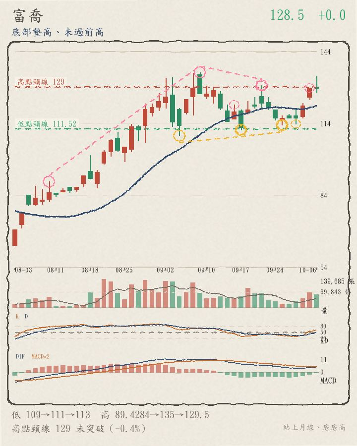
12:31 盤中 128.5（+0.00%），比加權指數弱 0.10 個百分點、站上月線 120.287，離高點頸線 129 還差 0.4%，底部還在墊高（但高點沒同步創高）。
- 月線位置：現價 128.5 在月線 120.287 之上（+6.8%）；5 日線 119.5 也在月線之下（短均在下）；月線向下
- 量能：以已過交易時間推估，今天成交量約是 20 日均量的 1.43 倍（量增），比 20 日均量大不少
- 關鍵價位：高點頸線 129 還沒突破，差 0.4%；前一交易日高點 128.5（高於 0.0%）；今天盤中高點 133.5（低於 3.7%）；今天盤中低點 126.5（高於 1.6%）
- 轉折結構：低點 108.571、111、113 墊高（底底高），但高點 89.4284、135、129.5 沒有同步創高；還沒確認的轉折低點 09-29 113、10-01 113.5；還沒確認的轉折高點 09-22 129.5、10-05 128.5（圖上虛線小圈）
全新 2455 上市
570 -36.0（-5.94%）
高點墊高、底部不穩 盤中成交值 75.81 億・全榜第 33 名（上市第 27 名）・相對大盤 -6.04
好條件 3/8：站上月線、月線向上、頭頭高
不好條件 4/8：今日下跌、相對大盤弱、量增下跌（出貨）、跌破昨日低點

12:31 盤中 570（-5.94%），比加權指數弱 6.04 個百分點、站上月線 541.75，離高點頸線 598.5 還差 4.8%，高點還在墊高（但底部沒同步墊高）。
- 月線位置：現價 570 在月線 541.75 之上（+5.2%）；5 日線 565.4 也在月線之上（短均在上）；月線向上
- 量能：以已過交易時間推估，今天成交量約是 20 日均量的 1.93 倍（爆量），比 20 日均量大不少；下跌卻量增，量價背離
- 關鍵價位：高點頸線 598.5 還沒突破，差 4.8%；前一交易日高點 607（低於 6.1%）；今天盤中高點 613（低於 7.0%）；今天盤中低點 560（高於 1.8%）
- 轉折結構：高點 555、552、590 墊高（頭頭高），但低點 374.5、491、493 沒有同步墊高；還沒確認的轉折低點 09-29 540、10-01 530；還沒確認的轉折高點 09-30 555、10-05 607（圖上虛線小圈）
萬潤 6187 上櫃
1560 +70.0（+4.70%）
高點墊高、底部不穩 盤中成交值 75.1 億・全榜第 34 名（上櫃第 7 名）・相對大盤 +4.60
好條件 6/8：站上月線、月線向上、頭頭高、突破頸線、相對大盤強、攻擊量（量增＋上漲）
不好條件 0/8：無
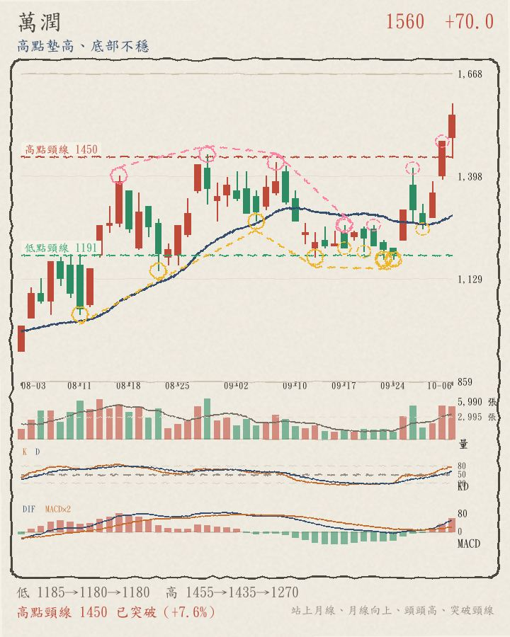
12:31 盤中 1560（+4.70%），比加權指數強 4.60 個百分點、站上月線 1281.5，已突破高點頸線 1450，高點還在墊高（但底部沒同步墊高）。
- 月線位置：現價 1560 在月線 1281.5 之上（+21.7%）；5 日線 1348 也在月線之上（短均在上）；月線向上
- 量能：以已過交易時間推估，今天成交量約是 20 日均量的 3.04 倍（爆量），比 20 日均量大不少；上漲又量增，量價配合
- 關鍵價位：高點頸線 1450 已站上；前一交易日高點 1490（高於 4.7%）；今天盤中高點 1590（低於 1.9%）；今天盤中低點 1445（高於 8.0%）
- 轉折結構：高點 1455、1435、1270 墊高（頭頭高），但低點 1185、1180、1180 沒有同步墊高；還沒確認的轉折低點 09-24 1180、10-01 1260；還沒確認的轉折高點 09-30 1420、10-05 1490（圖上虛線小圈）
華邦電 2344 上市
178.5 -2.5（-1.38%）
高點墊高、底部不穩 盤中成交值 74.47 億・全榜第 35 名（上市第 28 名）・相對大盤 -1.48
好條件 3/8：站上月線、月線向上、頭頭高
不好條件 3/8：今日下跌、相對大盤弱、貼近今日低點（1% 內）
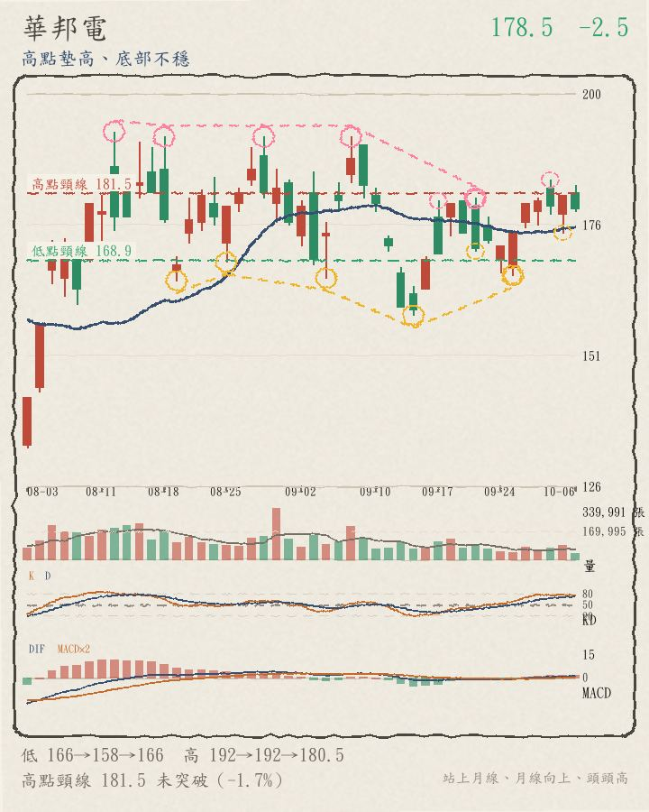
12:31 盤中 178.5（-1.38%），比加權指數弱 1.48 個百分點、站上月線 174.825，離高點頸線 181.5 還差 1.7%，高點還在墊高（但底部沒同步墊高）。
- 月線位置：現價 178.5 在月線 174.825 之上（+2.1%）；5 日線 178.7 也在月線之上（短均在上）；月線向上
- 量能：以已過交易時間推估，今天成交量約是 20 日均量的 0.55 倍（量縮），比 20 日均量少很多
- 關鍵價位：高點頸線 181.5 還沒突破，差 1.7%；前一交易日高點 181（低於 1.4%）；今天盤中高點 183（低於 2.5%）；今天盤中低點 178（高於 0.3%）
- 轉折結構：高點 192、192、180.5 墊高（頭頭高），但低點 165.5、158.5、166 沒有同步墊高；還沒確認的轉折低點 09-29 166、10-05 174；還沒確認的轉折高點 09-22 180.5、10-02 184（圖上虛線小圈）
合晶 6182 上櫃
129 -2.5（-1.90%）
高點墊高、底部不穩 盤中成交值 71.72 億・全榜第 36 名（上櫃第 8 名）・相對大盤 -2.00
好條件 3/8：站上月線、月線向上、頭頭高
不好條件 3/8：今日下跌、相對大盤弱、跌破昨日低點
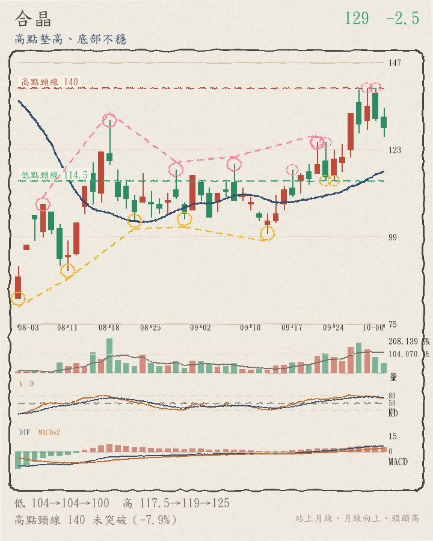
12:31 盤中 129（-1.90%），比加權指數弱 2.00 個百分點、站上月線 116.15，離高點頸線 140 還差 7.9%，高點還在墊高（但底部沒同步墊高）。
- 月線位置：現價 129 在月線 116.15 之上（+11.1%）；5 日線 130.1 也在月線之上（短均在上）；月線向上
- 量能：以已過交易時間推估，今天成交量約是 20 日均量的 1.04 倍（量平），跟 20 日均量差不多
- 關鍵價位：高點頸線 140 還沒突破，差 7.9%；前一交易日高點 140（低於 7.9%）；今天盤中高點 134.5（低於 4.1%）；今天盤中低點 126.5（高於 2.0%）
- 轉折結構：高點 117.5、119、125 墊高（頭頭高），但低點 103.5、104、100 沒有同步墊高；還沒確認的轉折低點 09-23 114.5、09-24 114.5；還沒確認的轉折高點 10-02 140、10-05 140（圖上虛線小圈）
力成 6239 上市
311 +13.5（+4.54%）
高點墊高、底部不穩 盤中成交值 68.09 億・全榜第 37 名（上市第 29 名）・相對大盤 +4.44
好條件 7/8：站上月線、月線向上、頭頭高、突破頸線、相對大盤強、攻擊量（量增＋上漲）、守住今日高檔（距今日高點 1% 內）
不好條件 0/8：無
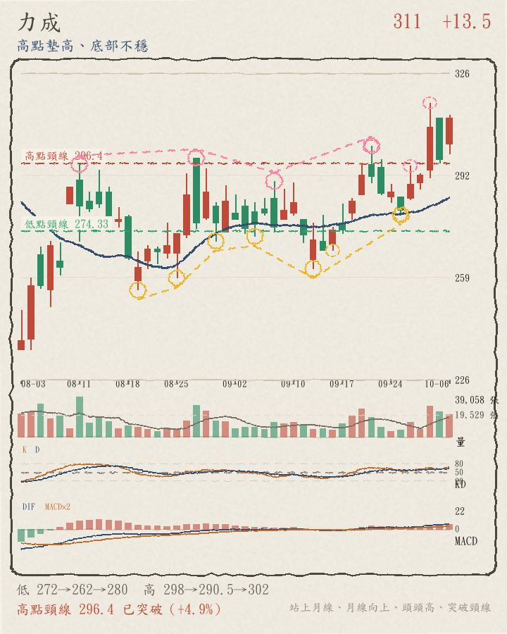
12:31 盤中 311（+4.54%），比加權指數強 4.44 個百分點、站上月線 283.425，已突破高點頸線 296.4，高點還在墊高（但底部沒同步墊高）。
- 月線位置：現價 311 在月線 283.425 之上（+9.7%）；5 日線 293.7 也在月線之上（短均在上）；月線向上
- 量能：以已過交易時間推估，今天成交量約是 20 日均量的 2.23 倍（爆量），比 20 日均量大不少；上漲又量增，量價配合
- 關鍵價位：高點頸線 296.4 已站上；前一交易日高點 311（高於 0.0%）；今天盤中高點 312（低於 0.3%）；今天盤中低點 299.5（高於 3.8%）
- 轉折結構：高點 298、290.5、302 墊高（頭頭高），但低點 272.5、262、279.5 沒有同步墊高；還沒確認的轉折低點 09-16 268、09-29 279.5；還沒確認的轉折高點 09-30 295.5、10-02 316（圖上虛線小圈）
玉晶光 3406 上市
1050 -5.0（-0.47%）
高點墊高、底部不穩 盤中成交值 65.43 億・全榜第 38 名（上市第 30 名）・相對大盤 -0.57
好條件 2/8：站上月線、頭頭高
不好條件 4/8：今日下跌、相對大盤弱、量增下跌（出貨）、月線下彎
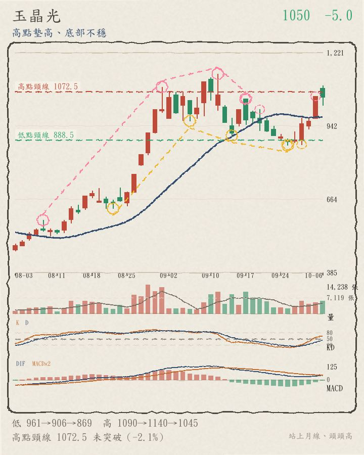
12:31 盤中 1050（-0.47%），比加權指數弱 0.57 個百分點、站上月線 976.1，離高點頸線 1072.5 還差 2.1%，高點還在墊高（但底部沒同步墊高）。
- 月線位置：現價 1050 在月線 976.1 之上（+7.6%）；5 日線 947.6 也在月線之下（短均在下）；月線向下
- 量能：以已過交易時間推估，今天成交量約是 20 日均量的 1.50 倍（爆量），比 20 日均量大不少；下跌卻量增，量價背離
- 關鍵價位：高點頸線 1072.5 還沒突破，差 2.1%；前一交易日高點 1055（低於 0.5%）；今天盤中高點 1095（低於 4.1%）；今天盤中低點 1020（高於 2.9%）
- 轉折結構：高點 1090、1140、1045 墊高（頭頭高），但低點 961、906、869 沒有同步墊高；還沒確認的轉折低點 09-29 869、10-01 871；還沒確認的轉折高點 09-21 1005、10-05 1055（圖上虛線小圈）
川湖 2059 上市
12990 -365.0（-2.73%）
高點墊高、底部不穩 盤中成交值 64.17 億・全榜第 39 名（上市第 31 名）・相對大盤 -2.83
好條件 2/8：站上月線、頭頭高
不好條件 4/8：今日下跌、相對大盤弱、量增下跌（出貨）、月線下彎
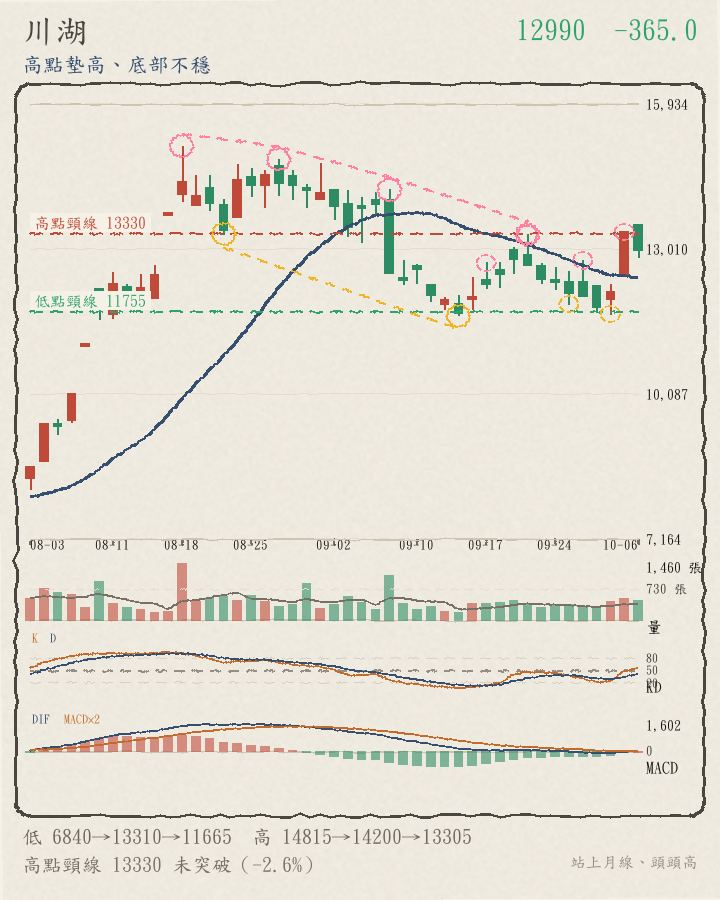
12:31 盤中 12990（-2.73%），比加權指數弱 2.83 個百分點、站上月線 12481，離高點頸線 13330 還差 2.6%，高點還在墊高（但底部沒同步墊高）。
- 月線位置：現價 12990 在月線 12481 之上（+4.1%）；5 日線 12301 也在月線之下（短均在下）；月線向下
- 量能：以已過交易時間推估，今天成交量約是 20 日均量的 1.53 倍（爆量），比 20 日均量大不少；下跌卻量增，量價背離
- 關鍵價位：高點頸線 13330 還沒突破，差 2.6%；前一交易日高點 13355（低於 2.7%）；今天盤中高點 13500（低於 3.8%）；今天盤中低點 12845（高於 1.1%）
- 轉折結構：高點 14815、14200、13305 墊高（頭頭高），但低點 6840、13310、11665 沒有同步墊高；還沒確認的轉折低點 09-29 11900、10-02 11700；還沒確認的轉折高點 09-30 12785、10-05 13355（圖上虛線小圈）
昇達科 3491 上櫃
1710 +80.0（+4.91%）
上升趨勢（底底高＋頭頭高） 盤中成交值 61.05 億・全榜第 40 名（上櫃第 9 名）・相對大盤 +4.81
好條件 7/8：站上月線、月線向上、底底高、頭頭高、突破頸線、相對大盤強、攻擊量（量增＋上漲）
不好條件 0/8：無
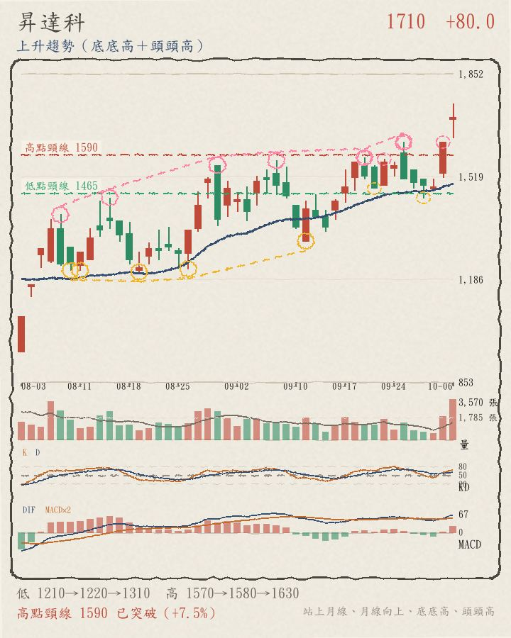
12:31 盤中 1710（+4.91%），比加權指數強 4.81 個百分點、站上月線 1485，已突破高點頸線 1590，轉折結構仍是底底高＋頭頭高。
- 月線位置：現價 1710 在月線 1485 之上（+15.2%）；5 日線 1523 也在月線之上（短均在上）；月線向上
- 量能：以已過交易時間推估，今天成交量約是 20 日均量的 3.44 倍（爆量），比 20 日均量大不少；上漲又量增，量價配合
- 關鍵價位：高點頸線 1590 已站上；前一交易日高點 1630（高於 4.9%）；今天盤中高點 1755（低於 2.6%）；今天盤中低點 1645（高於 4.0%）
- 轉折結構：低點 1210、1220、1310 一路墊高、高點 1570、1580、1630 也一路墊高，是底底高＋頭頭高；還沒確認的轉折低點 09-22 1480、10-01 1450；還沒確認的轉折高點 09-29 1630、10-05 1630（圖上虛線小圈）
京元電子 2449 上市
298.5 +4.5（+1.53%）
高點墊高、底部不穩 盤中成交值 55.36 億・全榜第 41 名（上市第 32 名）・相對大盤 +1.43
好條件 6/8：站上月線、月線向上、頭頭高、突破頸線、相對大盤強、守住今日高檔（距今日高點 1% 內）
不好條件 0/8：無
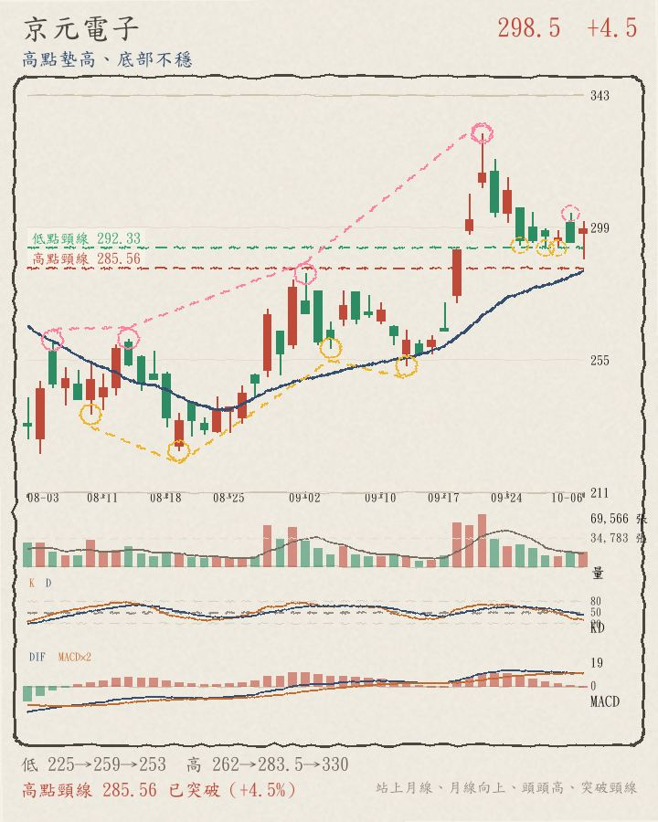
12:31 盤中 298.5（+1.53%），比加權指數強 1.43 個百分點、站上月線 282.625，已突破高點頸線 285.56，高點還在墊高（但底部沒同步墊高）。
- 月線位置：現價 298.5 在月線 282.625 之上（+5.6%）；5 日線 294.9 也在月線之上（短均在上）；月線向上
- 量能：以已過交易時間推估，今天成交量約是 20 日均量的 0.98 倍（量平），跟 20 日均量差不多
- 關鍵價位：高點頸線 285.56 已站上；前一交易日高點 303.5（低於 1.6%）；今天盤中高點 301（低於 0.8%）；今天盤中低點 288.5（高於 3.5%）
- 轉折結構：高點 262、283.5、330 墊高（頭頭高），但低點 225、259、253 沒有同步墊高；還沒確認的轉折低點 10-01 292、10-02 292；還沒確認的轉折高點 09-22 330、10-05 303.5（圖上虛線小圈）
世界 5347 上櫃
190.5 +6.5（+3.53%）
高點墊高、底部不穩 盤中成交值 54.75 億・全榜第 42 名（上櫃第 10 名）・相對大盤 +3.43
好條件 6/8：站上月線、月線向上、頭頭高、突破頸線、相對大盤強、攻擊量（量增＋上漲）
不好條件 0/8：無
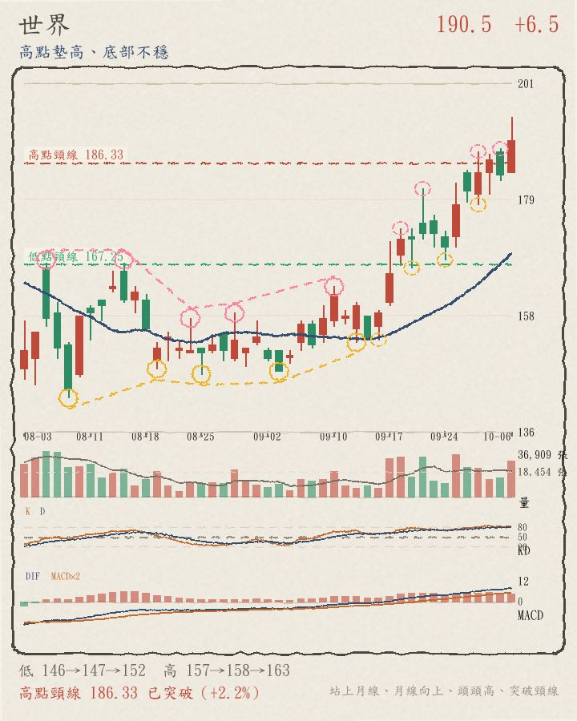
12:31 盤中 190.5（+3.53%），比加權指數強 3.43 個百分點、站上月線 167.275，已突破高點頸線 186.33，高點還在墊高（但底部沒同步墊高）。
- 月線位置：現價 190.5 在月線 167.275 之上（+13.9%）；5 日線 183 也在月線之上（短均在上）；月線向上
- 量能：以已過交易時間推估，今天成交量約是 20 日均量的 2.19 倍（爆量），比 20 日均量大不少；上漲又量增，量價配合
- 關鍵價位：高點頸線 186.33 已站上；前一交易日高點 189（高於 0.8%）；今天盤中高點 195（低於 2.3%）；今天盤中低點 184.5（高於 3.3%）
- 轉折結構：高點 157、158、163 墊高（頭頭高），但低點 146.5、147、152.5 沒有同步墊高；還沒確認的轉折低點 09-24 168、10-01 178.5；還沒確認的轉折高點 10-01 188.5、10-05 189（圖上虛線小圈）
智邦 2345 上市
2045 -30.0（-1.45%）
高點墊高、底部不穩 盤中成交值 52.09 億・全榜第 43 名（上市第 33 名）・相對大盤 -1.55
好條件 3/8：站上月線、頭頭高、突破頸線
不好條件 4/8：今日下跌、相對大盤弱、貼近今日低點（1% 內）、月線下彎
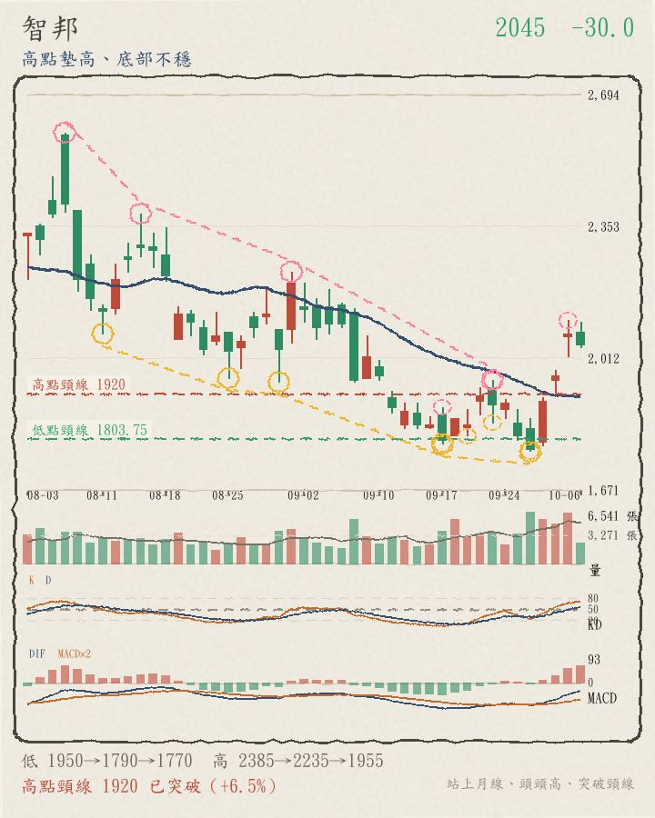
12:31 盤中 2045（-1.45%），比加權指數弱 1.55 個百分點、站上月線 1914.75，已突破高點頸線 1920，高點還在墊高（但底部沒同步墊高）。
- 月線位置：現價 2045 在月線 1914.75 之上（+6.8%）；5 日線 1905 也在月線之下（短均在下）；月線向下
- 量能：以已過交易時間推估，今天成交量約是 20 日均量的 0.90 倍（量平），比 20 日均量少一些
- 關鍵價位：高點頸線 1920 已站上；前一交易日高點 2110（低於 3.1%）；今天盤中高點 2105（低於 2.9%）；今天盤中低點 2040（高於 0.2%）
- 轉折結構：高點 2385、2235、1955 墊高（頭頭高），但低點 1950、1790、1770 沒有同步墊高；還沒確認的轉折低點 09-23 1845、09-30 1770；還沒確認的轉折高點 09-23 1955、10-05 2110（圖上虛線小圈）
聯亞 3081 上櫃
2955 -45.0（-1.50%）
高點墊高、底部不穩 盤中成交值 49.94 億・全榜第 44 名（上櫃第 11 名）・相對大盤 -1.60
好條件 3/8：站上月線、頭頭高、突破頸線
不好條件 3/8：今日下跌、相對大盤弱、月線下彎
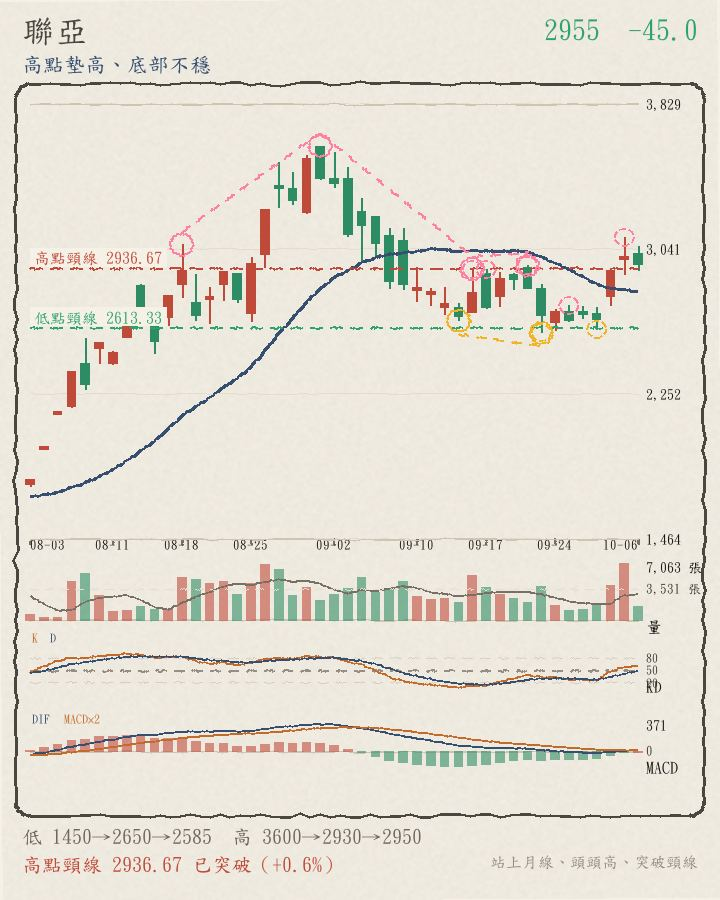
12:31 盤中 2955（-1.50%），比加權指數弱 1.60 個百分點、站上月線 2821.5，已突破高點頸線 2936.67，高點還在墊高（但底部沒同步墊高）。
- 月線位置：現價 2955 在月線 2821.5 之上（+4.7%）；5 日線 2786 也在月線之下（短均在下）；月線向下
- 量能：以已過交易時間推估，今天成交量約是 20 日均量的 0.68 倍（量縮），比 20 日均量少很多
- 關鍵價位：高點頸線 2936.67 已站上；前一交易日高點 3105（低於 4.8%）；今天盤中高點 3055（低於 3.3%）；今天盤中低點 2925（高於 1.0%）
- 轉折結構：高點 3600、2930、2950 墊高（頭頭高），但低點 1450、2650、2585 沒有同步墊高；還沒確認的轉折低點 09-23 2585、10-01 2605；還沒確認的轉折高點 09-29 2735、10-05 3105（圖上虛線小圈）
聯一光 3441 上櫃
255 +23.0（+9.91%）
上升趨勢（底底高＋頭頭高） 盤中成交值 49.6 億・全榜第 45 名（上櫃第 12 名）・相對大盤 +9.81
好條件 7/8：站上月線、月線向上、底底高、頭頭高、突破頸線、相對大盤強、攻擊量（量增＋上漲）
不好條件 0/8：無
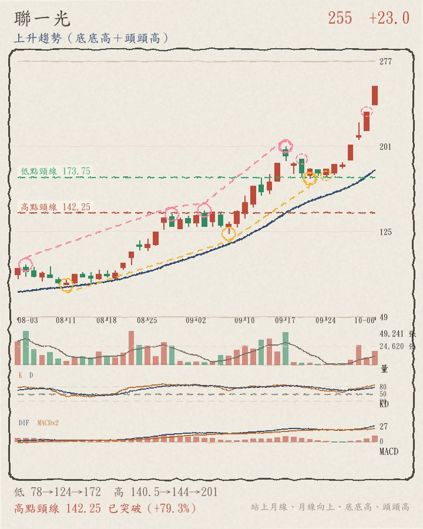
12:31 盤中 255（+9.91%），比加權指數強 9.81 個百分點、站上月線 174.625，已突破高點頸線 142.25，轉折結構仍是底底高＋頭頭高。
- 月線位置：現價 255 在月線 174.625 之上（+46.0%）；5 日線 203 也在月線之上（短均在上）；月線向上
- 量能：以已過交易時間推估，今天成交量約是 20 日均量的 1.71 倍（爆量），比 20 日均量大不少；上漲又量增，量價配合
- 關鍵價位：高點頸線 142.25 已站上；前一交易日高點 232（高於 9.9%）；今天盤中高點 255（高於 0.0%）；今天盤中低點 238（高於 7.1%）
- 轉折結構：低點 77.9、123.5、172.5 一路墊高、高點 140.5、144、201 也一路墊高，是底底高＋頭頭高；還沒確認的轉折低點 09-22 172.5、09-24 175；還沒確認的轉折高點 09-21 190、10-05 232（圖上虛線小圈）
群創 3481 上市
51.2 -1.1（-2.10%）
高點墊高、底部不穩 盤中成交值 49.47 億・全榜第 46 名（上市第 34 名）・相對大盤 -2.20
好條件 3/8：站上月線、月線向上、頭頭高
不好條件 4/8：今日下跌、相對大盤弱、貼近今日低點（1% 內）、跌破昨日低點
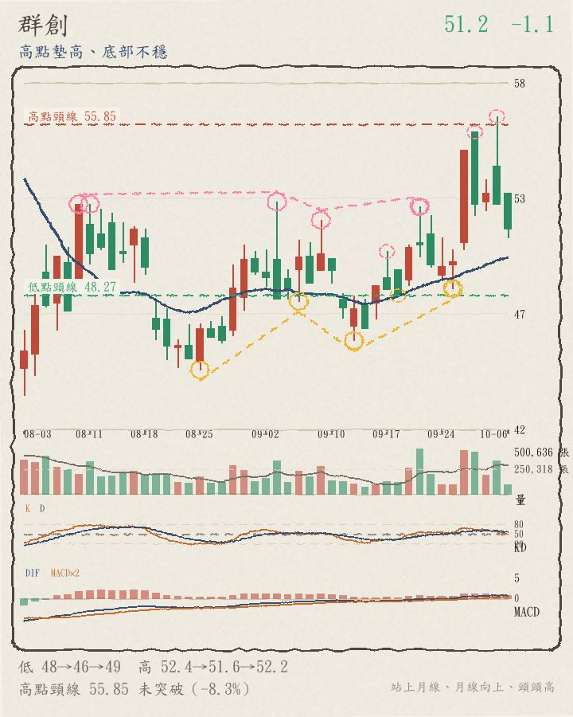
12:31 盤中 51.2（-2.10%），比加權指數弱 2.20 個百分點、站上月線 49.81，離高點頸線 55.85 還差 8.3%，高點還在墊高（但底部沒同步墊高）。
- 月線位置：現價 51.2 在月線 49.81 之上（+2.8%）；5 日線 52.37 也在月線之上（短均在上）；月線向上
- 量能：以已過交易時間推估，今天成交量約是 20 日均量的 0.56 倍（量縮），比 20 日均量少很多
- 關鍵價位：高點頸線 55.85 還沒突破，差 8.3%；前一交易日高點 56.2（低於 8.9%）；今天盤中高點 52.8（低於 3.0%）；今天盤中低點 50.8（高於 0.8%）
- 轉折結構：高點 52.4、51.6、52.2 墊高（頭頭高），但低點 48、46.25、48.55 沒有同步墊高；還沒確認的轉折低點 09-18 48.25、09-29 48.55；還沒確認的轉折高點 10-01 55.5、10-05 56.2（圖上虛線小圈）
華星光 4979 上櫃
569 -29.0（-4.85%）
區間或轉弱 盤中成交值 49.03 億・全榜第 47 名（上櫃第 13 名）・相對大盤 -4.95
好條件 0/8：無
不好條件 6/8：今日下跌、相對大盤弱、在月線之下、量增下跌（出貨）、跌破昨日低點、月線下彎

12:31 盤中 569（-4.85%），比加權指數弱 4.95 個百分點、跌破月線 577.9，離高點頸線 649.25 還差 12.4%，轉折還沒走出明顯方向。
- 月線位置：現價 569 在月線 577.9 之下（-1.5%）；5 日線 575.2 也在月線之下（短均在下）；月線向下
- 量能：以已過交易時間推估，今天成交量約是 20 日均量的 1.63 倍（爆量），比 20 日均量大不少；下跌卻量增，量價背離
- 關鍵價位：高點頸線 649.25 還沒突破，差 12.4%；前一交易日高點 605（低於 6.0%）；今天盤中高點 622（低於 8.5%）；今天盤中低點 562（高於 1.2%）
- 轉折結構：低點 495、572、501 與高點 635、658、650 都沒有明顯遞增，屬於區間震盪或轉弱；還沒確認的轉折低點 09-29 556、10-01 545；還沒確認的轉折高點 09-30 576、10-05 605（圖上虛線小圈）
日月光投控 3711 上市
740 -2.0（-0.27%）
上升趨勢（底底高＋頭頭高） 盤中成交值 49 億・全榜第 48 名（上市第 35 名）・相對大盤 -0.37
好條件 5/8：站上月線、月線向上、底底高、頭頭高、突破頸線
不好條件 3/8：今日下跌、相對大盤弱、貼近今日低點（1% 內）
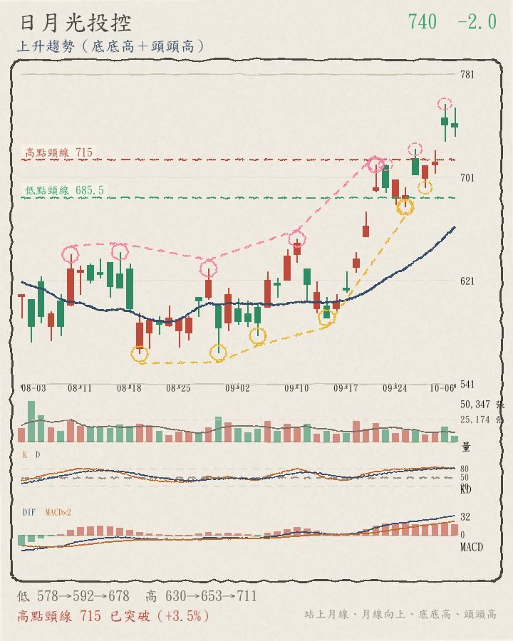
12:31 盤中 740（-0.27%），比加權指數弱 0.37 個百分點、站上月線 654.95，已突破高點頸線 715，轉折結構仍是底底高＋頭頭高。
- 月線位置：現價 740 在月線 654.95 之上（+13.0%）；5 日線 711 也在月線之上（短均在上）；月線向上
- 量能：以已過交易時間推估，今天成交量約是 20 日均量的 0.56 倍（量縮），比 20 日均量少很多
- 關鍵價位：高點頸線 715 已站上；前一交易日高點 758（低於 2.4%）；今天盤中高點 755（低於 2.0%）；今天盤中低點 733（高於 1.0%）
- 轉折結構：低點 578、592、678 一路墊高、高點 630、653、711 也一路墊高，是底底高＋頭頭高；還沒確認的轉折低點 09-29 678、10-01 693；還沒確認的轉折高點 09-30 723、10-05 758（圖上虛線小圈）
台虹 8039 上市
297 -6.5（-2.14%）
區間或轉弱 盤中成交值 45.16 億・全榜第 49 名（上市第 36 名）・相對大盤 -2.24
好條件 1/8：站上月線
不好條件 3/8：今日下跌、相對大盤弱、月線下彎
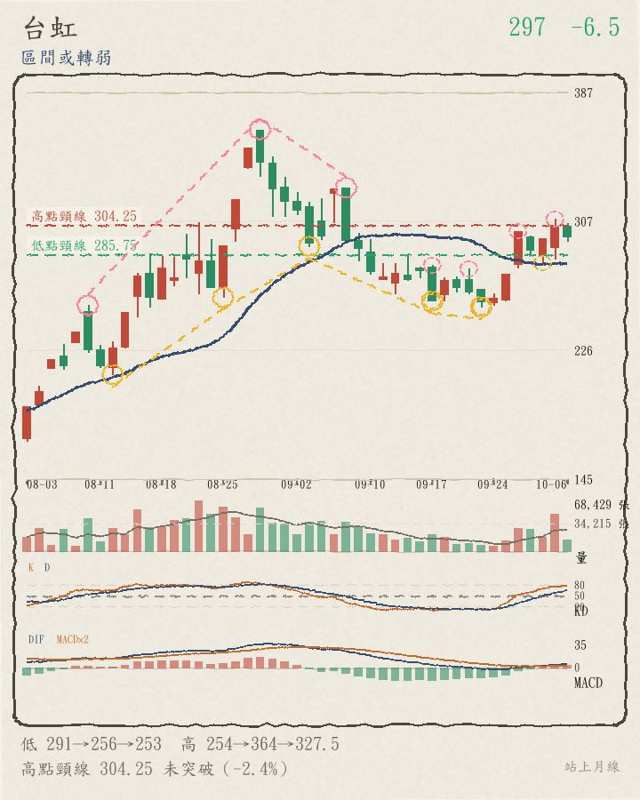
12:31 盤中 297（-2.14%），比加權指數弱 2.24 個百分點、站上月線 280.275，離高點頸線 304.25 還差 2.4%，轉折還沒走出明顯方向。
- 月線位置：現價 297 在月線 280.275 之上（+6.0%）；5 日線 292.4 也在月線之上（短均在上）；月線向下
- 量能：以已過交易時間推估，今天成交量約是 20 日均量的 0.90 倍（量平），比 20 日均量少一些
- 關鍵價位：高點頸線 304.25 還沒突破，差 2.4%；前一交易日高點 308（低於 3.6%）；今天盤中高點 305.5（低於 2.8%）；今天盤中低點 294（高於 1.0%）
- 轉折結構：低點 291、256.5、253 與高點 254、364、327.5 都沒有明顯遞增，屬於區間震盪或轉弱；還沒確認的轉折低點 09-23 253、10-02 280.5；還沒確認的轉折高點 09-30 300.5、10-05 308（圖上虛線小圈）
緯創 3231 上市
189.5 +0.0（+0.00%）
高點墊高、底部不穩 盤中成交值 45.05 億・全榜第 50 名（上市第 37 名）・相對大盤 -0.10
好條件 3/8：站上月線、月線向上、頭頭高
不好條件 2/8：相對大盤弱、貼近今日低點（1% 內）
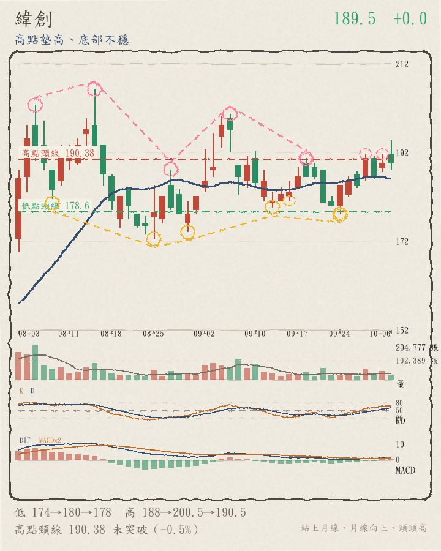
12:31 盤中 189.5（+0.00%），比加權指數弱 0.10 個百分點、站上月線 186.425，離高點頸線 190.38 還差 0.5%，高點還在墊高（但底部沒同步墊高）。
- 月線位置：現價 189.5 在月線 186.425 之上（+1.6%）；5 日線 187.3 也在月線之上（短均在上）；月線向上
- 量能：以已過交易時間推估，今天成交量約是 20 日均量的 0.61 倍（量縮），比 20 日均量少很多
- 關鍵價位：高點頸線 190.38 還沒突破，差 0.5%；前一交易日高點 191.5（低於 1.0%）；今天盤中高點 194.5（低於 2.6%）；今天盤中低點 188（高於 0.8%）
- 轉折結構：高點 188、200.5、190.5 墊高（頭頭高），但低點 174、179.5、178 沒有同步墊高；還沒確認的轉折低點 09-16 181、09-24 178；還沒確認的轉折高點 10-01 191.5、10-05 191.5（圖上虛線小圈）
鴻勁 7769 上市
5900 +85.0（+1.46%）
區間或轉弱 盤中成交值 44.78 億・全榜第 51 名（上市第 38 名）・相對大盤 +1.36
好條件 2/8：突破頸線、相對大盤強
不好條件 2/8：在月線之下、月線下彎
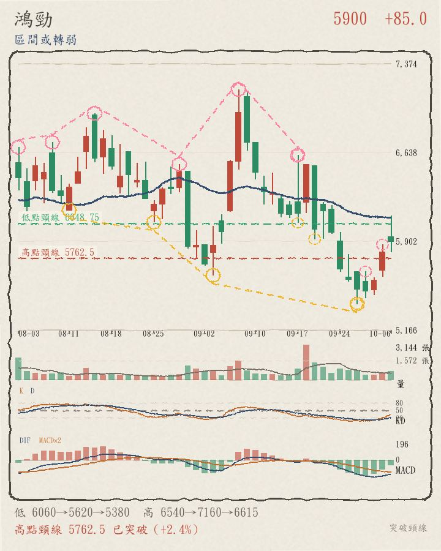
12:31 盤中 5900（+1.46%），比加權指數強 1.36 個百分點、跌破月線 6101.75，已突破高點頸線 5762.5，轉折還沒走出明顯方向。
- 月線位置：現價 5900 在月線 6101.75 之下（-3.3%）；5 日線 5595 也在月線之下（短均在下）；月線向下
- 量能：以已過交易時間推估，今天成交量約是 20 日均量的 1.08 倍（量平），比 20 日均量大一些
- 關鍵價位：高點頸線 5762.5 已站上；前一交易日高點 5875（高於 0.4%）；今天盤中高點 6115（低於 3.5%）；今天盤中低點 5815（高於 1.5%）
- 轉折結構：低點 6060、5620、5380 與高點 6540、7160、6615 都沒有明顯遞增，屬於區間震盪或轉弱；還沒確認的轉折低點 09-21 5920、09-30 5380；還沒確認的轉折高點 10-01 5650、10-05 5875（圖上虛線小圈）
晶技 3042 上市
206 -16.0（-7.21%）
高點墊高、底部不穩 盤中成交值 43.73 億・全榜第 52 名（上市第 39 名）・相對大盤 -7.31
好條件 4/8：站上月線、月線向上、頭頭高、突破頸線
不好條件 4/8：今日下跌、相對大盤弱、量增下跌（出貨）、跌破昨日低點
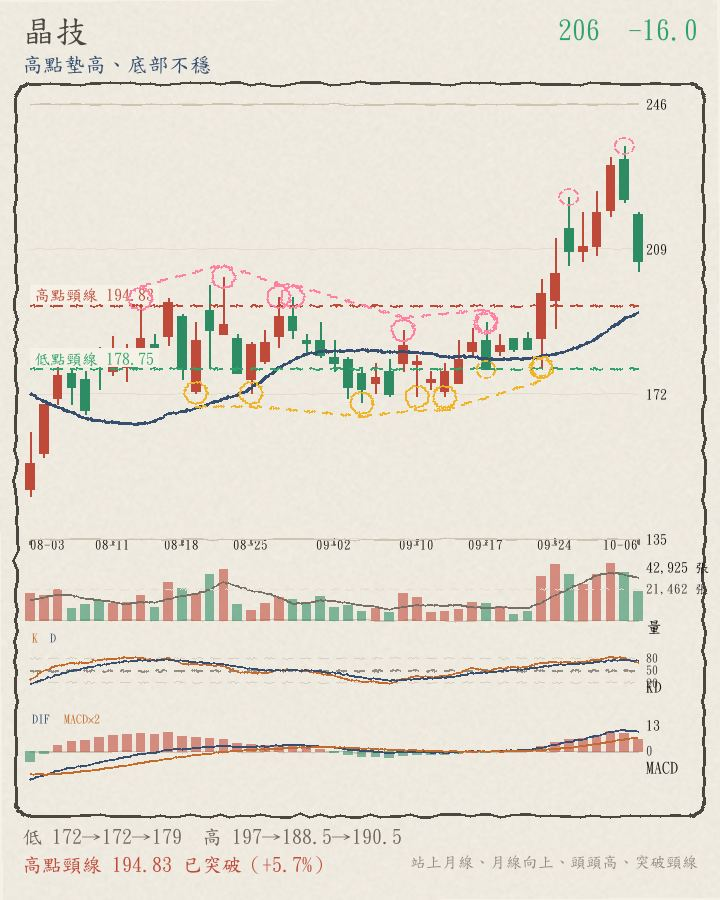
12:31 盤中 206（-7.21%），比加權指數弱 7.31 個百分點、站上月線 191.4，已突破高點頸線 194.83，高點還在墊高（但底部沒同步墊高）。
- 月線位置：現價 206 在月線 191.4 之上（+7.6%）；5 日線 217.9 也在月線之上（短均在上）；月線向上
- 量能：以已過交易時間推估，今天成交量約是 20 日均量的 1.56 倍（爆量），比 20 日均量大不少；下跌卻量增，量價背離
- 關鍵價位：高點頸線 194.83 已站上；前一交易日高點 235.5（低於 12.5%）；今天盤中高點 218.5（低於 5.7%）；今天盤中低點 203.5（高於 1.2%）
- 轉折結構：高點 197、188.5、190.5 墊高（頭頭高），但低點 171.5、171.5、179 沒有同步墊高；還沒確認的轉折低點 09-17 178.5、09-23 179；還沒確認的轉折高點 09-29 222.5、10-05 235.5（圖上虛線小圈）
順達 3211 上櫃
399 +0.0（+0.00%）
上升趨勢（底底高＋頭頭高） 盤中成交值 43.59 億・全榜第 53 名（上櫃第 14 名）・相對大盤 -0.10
好條件 5/8：站上月線、月線向上、底底高、頭頭高、守住今日高檔（距今日高點 1% 內）
不好條件 1/8：相對大盤弱
12:31 盤中 399（+0.00%），比加權指數弱 0.10 個百分點、站上月線 378.8，離高點頸線 411.5 還差 3.0%，轉折結構仍是底底高＋頭頭高。
- 月線位置：現價 399 在月線 378.8 之上（+5.3%）；5 日線 394.9 也在月線之上（短均在上）；月線向上
- 量能：以已過交易時間推估，今天成交量約是 20 日均量的 3.95 倍（爆量），比 20 日均量大不少
- 關鍵價位：高點頸線 411.5 還沒突破，差 3.0%；前一交易日高點 406.5（低於 1.8%）；今天盤中高點 401（低於 0.5%）；今天盤中低點 361（高於 10.5%）
- 轉折結構：低點 278.5、315.5、349 一路墊高、高點 419、414.5、398 也一路墊高，是底底高＋頭頭高；還沒確認的轉折低點 09-17 360.5、09-24 374.5；還沒確認的轉折高點 09-30 406、10-05 406.5（圖上虛線小圈）
光洋科 1785 上櫃
112 +9.5（+9.27%）
高點墊高、底部不穩 盤中成交值 42.67 億・全榜第 54 名（上櫃第 15 名）・相對大盤 +9.17
好條件 6/8：站上月線、頭頭高、突破頸線、相對大盤強、攻擊量（量增＋上漲）、守住今日高檔（距今日高點 1% 內）
不好條件 1/8：月線下彎
12:31 盤中 112（+9.27%），比加權指數強 9.17 個百分點、站上月線 98.315，已突破高點頸線 104.62，高點還在墊高（但底部沒同步墊高）。
- 月線位置：現價 112 在月線 98.315 之上（+13.9%）；5 日線 100.9 也在月線之上（短均在上）；月線向下
- 量能：以已過交易時間推估，今天成交量約是 20 日均量的 11.37 倍（爆量），比 20 日均量大不少；上漲又量增，量價配合
- 關鍵價位：高點頸線 104.62 已站上；前一交易日高點 105（高於 6.7%）；今天盤中高點 112.5（低於 0.4%）；今天盤中低點 102（高於 9.8%）
- 轉折結構：高點 105、105、98.6 墊高（頭頭高），但低點 100、93.5、95 沒有同步墊高；還沒確認的轉折低點 09-21 95.5、09-24 95；還沒確認的轉折高點 09-30 103.5、10-05 105（圖上虛線小圈）
富世達 6805 上市
2410 -40.0（-1.63%）
區間或轉弱 盤中成交值 42.13 億・全榜第 55 名（上市第 40 名）・相對大盤 -1.73
好條件 2/8：站上月線、月線向上
不好條件 3/8：今日下跌、相對大盤弱、量增下跌（出貨）
12:31 盤中 2410（-1.63%），比加權指數弱 1.73 個百分點、站上月線 2302，離高點頸線 2472.5 還差 2.5%，轉折還沒走出明顯方向。
- 月線位置：現價 2410 在月線 2302 之上（+4.7%）；5 日線 2424 也在月線之上（短均在上）；月線向上
- 量能：以已過交易時間推估，今天成交量約是 20 日均量的 1.68 倍（爆量），比 20 日均量大不少；下跌卻量增，量價背離
- 關鍵價位：高點頸線 2472.5 還沒突破，差 2.5%；前一交易日高點 2510（低於 4.0%）；今天盤中高點 2505（低於 3.8%）；今天盤中低點 2380（高於 1.3%）
- 轉折結構：低點 2030、2010、2010 與高點 2435、2325、2750 都沒有明顯遞增，屬於區間震盪或轉弱；還沒確認的轉折低點 09-29 2420、10-02 2300；還沒確認的轉折高點 09-30 2720、10-05 2510（圖上虛線小圈）
啟碁 6285 上市
259.5 +10.0（+4.01%）
高點墊高、底部不穩 盤中成交值 42.09 億・全榜第 56 名（上市第 41 名）・相對大盤 +3.91
好條件 5/8：站上月線、頭頭高、突破頸線、相對大盤強、攻擊量（量增＋上漲）
不好條件 1/8：月線下彎
12:31 盤中 259.5（+4.01%），比加權指數強 3.91 個百分點、站上月線 232.3，已突破高點頸線 257.62，高點還在墊高（但底部沒同步墊高）。
- 月線位置：現價 259.5 在月線 232.3 之上（+11.7%）；5 日線 238.3 也在月線之上（短均在上）；月線向下
- 量能：以已過交易時間推估，今天成交量約是 20 日均量的 7.04 倍（爆量），比 20 日均量大不少；上漲又量增，量價配合
- 關鍵價位：高點頸線 257.62 已站上；前一交易日高點 250.5（高於 3.6%）；今天盤中高點 270（低於 3.9%）；今天盤中低點 254.5（高於 2.0%）
- 轉折結構：高點 261、255、240.5 墊高（頭頭高），但低點 225.5、233.5、216 沒有同步墊高；還沒確認的轉折低點 09-24 229、10-01 233；還沒確認的轉折高點 09-24 240.5、10-05 250.5（圖上虛線小圈）
尖點 8021 上市
565 +5.0（+0.89%）
高點墊高、底部不穩 盤中成交值 40.34 億・全榜第 57 名（上市第 42 名）・相對大盤 +0.79
好條件 6/8：站上月線、月線向上、頭頭高、突破頸線、相對大盤強、攻擊量（量增＋上漲）
不好條件 0/8：無
12:31 盤中 565（+0.89%），比加權指數強 0.79 個百分點、站上月線 466.9，已突破高點頸線 481，高點還在墊高（但底部沒同步墊高）。
- 月線位置：現價 565 在月線 466.9 之上（+21.0%）；5 日線 516.4 也在月線之上（短均在上）；月線向上
- 量能：以已過交易時間推估，今天成交量約是 20 日均量的 1.60 倍（爆量），比 20 日均量大不少；上漲又量增，量價配合
- 關鍵價位：高點頸線 481 已站上；前一交易日高點 577（低於 2.1%）；今天盤中高點 584（低於 3.3%）；今天盤中低點 557（高於 1.4%）
- 轉折結構：高點 462、481、481 墊高（頭頭高），但低點 373.5、413、410.5 沒有同步墊高；還沒確認的轉折低點 09-18 444、09-29 470；還沒確認的轉折高點 09-21 481、10-05 577（圖上虛線小圈）
強茂 2481 上市
174.5 -6.0（-3.32%）
高點墊高、底部不穩 盤中成交值 39.59 億・全榜第 58 名（上市第 43 名）・相對大盤 -3.42
好條件 3/8：站上月線、月線向上、頭頭高
不好條件 3/8：今日下跌、相對大盤弱、跌破昨日低點
12:31 盤中 174.5（-3.32%），比加權指數弱 3.42 個百分點、站上月線 165.1，離高點頸線 180.33 還差 3.2%，高點還在墊高（但底部沒同步墊高）。
- 月線位置：現價 174.5 在月線 165.1 之上（+5.7%）；5 日線 176 也在月線之上（短均在上）；月線向上
- 量能：以已過交易時間推估，今天成交量約是 20 日均量的 0.70 倍（量縮），比 20 日均量少很多
- 關鍵價位：高點頸線 180.33 還沒突破，差 3.2%；前一交易日高點 191.5（低於 8.9%）；今天盤中高點 181.5（低於 3.9%）；今天盤中低點 172.5（高於 1.2%）
- 轉折結構：高點 168、181、181 墊高（頭頭高），但低點 146、146、170 沒有同步墊高；還沒確認的轉折低點 09-24 172、09-30 170；還沒確認的轉折高點 10-01 179、10-05 191.5（圖上虛線小圈）
雍智科技 6683 上櫃
1515 +75.0（+5.21%）
上升趨勢（底底高＋頭頭高） 盤中成交值 39.39 億・全榜第 59 名（上櫃第 16 名）・相對大盤 +5.11
好條件 6/8：站上月線、月線向上、底底高、頭頭高、相對大盤強、攻擊量（量增＋上漲）
不好條件 0/8：無
12:31 盤中 1515（+5.21%），比加權指數強 5.11 個百分點、站上月線 1483，離高點頸線 1695 還差 10.6%，轉折結構仍是底底高＋頭頭高。
- 月線位置：現價 1515 在月線 1483 之上（+2.2%）；5 日線 1514 也在月線之上（短均在上）；月線向上
- 量能：以已過交易時間推估，今天成交量約是 20 日均量的 2.36 倍（爆量），比 20 日均量大不少；上漲又量增，量價配合
- 關鍵價位：高點頸線 1695 還沒突破，差 10.6%；前一交易日高點 1500（高於 1.0%）；今天盤中高點 1580（低於 4.1%）；今天盤中低點 1495（高於 1.3%）
- 轉折結構：低點 1050、1235、1450 一路墊高、高點 1460、1505、1740 也一路墊高，是底底高＋頭頭高；還沒確認的轉折低點 09-29 1450、10-05 1435；還沒確認的轉折高點 09-21 1740、10-02 1650（圖上虛線小圈）
光寶科 2301 上市
297.5 -0.5（-0.17%）
高點墊高、底部不穩 盤中成交值 39.12 億・全榜第 60 名（上市第 44 名）・相對大盤 -0.27
好條件 2/8：站上月線、頭頭高
不好條件 3/8：今日下跌、相對大盤弱、月線下彎
12:31 盤中 297.5（-0.17%），比加權指數弱 0.27 個百分點、站上月線 285.75，離高點頸線 300.5 還差 1.0%，高點還在墊高（但底部沒同步墊高）。
- 月線位置：現價 297.5 在月線 285.75 之上（+4.1%）；5 日線 284.9 也在月線之下（短均在下）；月線向下
- 量能：以已過交易時間推估，今天成交量約是 20 日均量的 1.01 倍（量平），跟 20 日均量差不多
- 關鍵價位：高點頸線 300.5 還沒突破，差 1.0%；前一交易日高點 301.5（低於 1.3%）；今天盤中高點 303（低於 1.8%）；今天盤中低點 292.5（高於 1.7%）
- 轉折結構：高點 286.5、328、299.5 墊高（頭頭高），但低點 296.5、271、278 沒有同步墊高；還沒確認的轉折低點 09-24 278、10-01 278；還沒確認的轉折高點 10-01 285、10-05 301.5（圖上虛線小圈）
愛普* 6531 上市
1035 -20.0（-1.90%）
高點墊高、底部不穩 盤中成交值 38.83 億・全榜第 61 名（上市第 45 名）・相對大盤 -2.00
好條件 3/8：站上月線、月線向上、頭頭高
不好條件 3/8：今日下跌、相對大盤弱、量增下跌（出貨）
12:31 盤中 1035（-1.90%），比加權指數弱 2.00 個百分點、站上月線 960.7，離高點頸線 1077.5 還差 3.9%，高點還在墊高（但底部沒同步墊高）。
- 月線位置：現價 1035 在月線 960.7 之上（+7.7%）；5 日線 968.8 也在月線之上（短均在上）；月線向上
- 量能：以已過交易時間推估，今天成交量約是 20 日均量的 1.36 倍（量增），比 20 日均量大不少；下跌卻量增，量價背離
- 關鍵價位：高點頸線 1077.5 還沒突破，差 3.9%；前一交易日高點 1090（低於 5.0%）；今天盤中高點 1085（低於 4.6%）；今天盤中低點 1020（高於 1.5%）
- 轉折結構：高點 995、1065、1005 墊高（頭頭高），但低點 813、901、887 沒有同步墊高；還沒確認的轉折低點 09-29 916、10-01 914；還沒確認的轉折高點 09-24 1005、10-05 1090（圖上虛線小圈）
力積電 6770 上市
74.7 -1.1（-1.45%）
高點墊高、底部不穩 盤中成交值 37.43 億・全榜第 62 名（上市第 46 名）・相對大盤 -1.55
好條件 4/8：站上月線、月線向上、頭頭高、突破頸線
不好條件 4/8：今日下跌、相對大盤弱、貼近今日低點（1% 內）、跌破昨日低點
12:31 盤中 74.7（-1.45%），比加權指數弱 1.55 個百分點、站上月線 72.355，已突破高點頸線 74.4，高點還在墊高（但底部沒同步墊高）。
- 月線位置：現價 74.7 在月線 72.355 之上（+3.2%）；5 日線 74.88 也在月線之上（短均在上）；月線向上
- 量能：以已過交易時間推估，今天成交量約是 20 日均量的 0.51 倍（量縮），比 20 日均量少很多
- 關鍵價位：高點頸線 74.4 已站上；前一交易日高點 78.1（低於 4.4%）；今天盤中高點 76（低於 1.7%）；今天盤中低點 74.2（高於 0.7%）
- 轉折結構：高點 73.7、75.3、74.7 墊高（頭頭高），但低點 67、66.7、70.5 沒有同步墊高；還沒確認的轉折低點 09-24 70.5、10-01 73.3；還沒確認的轉折高點 09-30 75.4、10-05 78.1（圖上虛線小圈）
旺矽 6223 上櫃
5690 +170.0（+3.08%）
區間或轉弱 盤中成交值 37.38 億・全榜第 63 名（上櫃第 17 名）・相對大盤 +2.98
好條件 5/8：站上月線、月線向上、突破頸線、相對大盤強、守住今日高檔（距今日高點 1% 內）
不好條件 0/8：無
12:31 盤中 5690（+3.08%），比加權指數強 2.98 個百分點、站上月線 5463.75，已突破高點頸線 5576.67，轉折還沒走出明顯方向。
- 月線位置：現價 5690 在月線 5463.75 之上（+4.1%）；5 日線 5234 也在月線之下（短均在下）；月線向上
- 量能：以已過交易時間推估，今天成交量約是 20 日均量的 0.90 倍（量平），比 20 日均量少一些
- 關鍵價位：高點頸線 5576.67 已站上；前一交易日高點 5520（高於 3.1%）；今天盤中高點 5725（低於 0.6%）；今天盤中低點 5425（高於 4.9%）
- 轉折結構：低點 4730、5365、5090 與高點 5585、6060、5860 都沒有明顯遞增，屬於區間震盪或轉弱；還沒確認的轉折低點 09-22 5090、10-01 4995；還沒確認的轉折高點 09-24 5625、10-05 5520（圖上虛線小圈）
鼎元 2426 上市
106.5 -7.5（-6.58%）
上升趨勢（底底高＋頭頭高） 盤中成交值 36.9 億・全榜第 64 名（上市第 47 名）・相對大盤 -6.68
好條件 4/8：站上月線、月線向上、底底高、頭頭高
不好條件 4/8：今日下跌、相對大盤弱、貼近今日低點（1% 內）、跌破昨日低點
12:31 盤中 106.5（-6.58%），比加權指數弱 6.68 個百分點、站上月線 99.69，離高點頸線 112.17 還差 5.1%，轉折結構仍是底底高＋頭頭高。
- 月線位置：現價 106.5 在月線 99.69 之上（+6.8%）；5 日線 104.96 也在月線之上（短均在上）；月線向上
- 量能：以已過交易時間推估，今天成交量約是 20 日均量的 1.03 倍（量平），跟 20 日均量差不多
- 關鍵價位：高點頸線 112.17 還沒突破，差 5.1%；前一交易日高點 114（低於 6.6%）；今天盤中高點 118（低於 9.7%）；今天盤中低點 106（高於 0.5%）
- 轉折結構：低點 65.2、90.6、96.3 一路墊高、高點 111、103.5、103.5 也一路墊高，是底底高＋頭頭高；還沒確認的轉折低點 09-29 96.3、10-02 102；還沒確認的轉折高點 10-01 111.5、10-05 114（圖上虛線小圈）
台表科 6278 上市
233.5 +13.5（+6.14%）
上升趨勢（底底高＋頭頭高） 盤中成交值 35.86 億・全榜第 65 名（上市第 48 名）・相對大盤 +6.04
好條件 8/8：站上月線、月線向上、底底高、頭頭高、突破頸線、相對大盤強、攻擊量（量增＋上漲）、守住今日高檔（距今日高點 1% 內）
不好條件 0/8：無
12:31 盤中 233.5（+6.14%），比加權指數強 6.04 個百分點、站上月線 200.025，已突破高點頸線 216.67，轉折結構仍是底底高＋頭頭高。
- 月線位置：現價 233.5 在月線 200.025 之上（+16.7%）；5 日線 217.5 也在月線之上（短均在上）；月線向上
- 量能：以已過交易時間推估，今天成交量約是 20 日均量的 3.77 倍（爆量），比 20 日均量大不少；上漲又量增，量價配合
- 關鍵價位：高點頸線 216.67 已站上；前一交易日高點 222（高於 5.2%）；今天盤中高點 235（低於 0.6%）；今天盤中低點 217.5（高於 7.4%）
- 轉折結構：低點 168、172、179.5 一路墊高、高點 181.5、210、223 也一路墊高，是底底高＋頭頭高；還沒確認的轉折低點 09-24 204.5、10-05 211.5；還沒確認的轉折高點 09-30 223、10-05 222（圖上虛線小圈）
頎邦 6147 上櫃
217 +1.0（+0.46%）
底部墊高、未過前高 盤中成交值 34.88 億・全榜第 66 名（上櫃第 18 名）・相對大盤 +0.36
好條件 4/8：站上月線、月線向上、底底高、相對大盤強
不好條件 0/8：無
12:31 盤中 217（+0.46%），比加權指數強 0.36 個百分點、站上月線 205.9，離高點頸線 229.33 還差 5.4%，底部還在墊高（但高點沒同步創高）。
- 月線位置：現價 217 在月線 205.9 之上（+5.4%）；5 日線 216.5 也在月線之上（短均在上）；月線向上
- 量能：以已過交易時間推估，今天成交量約是 20 日均量的 0.44 倍（量縮），比 20 日均量少很多；上漲但量縮，量價背離
- 關鍵價位：高點頸線 229.33 還沒突破，差 5.4%；前一交易日高點 228（低於 4.8%）；今天盤中高點 220（低於 1.4%）；今天盤中低點 211（高於 2.8%）
- 轉折結構：低點 152、171、208 墊高（底底高），但高點 203、203、233 沒有同步創高；還沒確認的轉折低點 09-29 208、10-05 215.5；還沒確認的轉折高點 10-01 227、10-05 228（圖上虛線小圈）
和益 1709 上市
64.4 +0.1（+0.16%）
上升趨勢（底底高＋頭頭高） 盤中成交值 34.2 億・全榜第 67 名（上市第 49 名）・相對大盤 +0.06
好條件 7/8：站上月線、月線向上、底底高、頭頭高、突破頸線、相對大盤強、攻擊量（量增＋上漲）
不好條件 0/8：無
12:31 盤中 64.4（+0.16%），比加權指數強 0.06 個百分點、站上月線 42.545，已突破高點頸線 37.62，轉折結構仍是底底高＋頭頭高。
- 月線位置：現價 64.4 在月線 42.545 之上（+51.4%）；5 日線 53.68 也在月線之上（短均在上）；月線向上
- 量能：以已過交易時間推估，今天成交量約是 20 日均量的 2.34 倍（爆量），比 20 日均量大不少；上漲又量增，量價配合
- 關鍵價位：高點頸線 37.62 已站上；前一交易日高點 64.3（高於 0.2%）；今天盤中高點 66.2（低於 2.7%）；今天盤中低點 58.2（高於 10.7%）
- 轉折結構：低點 30.1、32.8、34.3 一路墊高、高點 37.7、37.55、50.5 也一路墊高，是底底高＋頭頭高；還沒確認的轉折低點 09-18 38.7、09-29 43.2；還沒確認的轉折高點 09-23 50.5、10-05 64.3（圖上虛線小圈）
禾伸堂 3026 上市
801 -16.0（-1.96%）
上升趨勢（底底高＋頭頭高） 盤中成交值 34.16 億・全榜第 68 名（上市第 50 名）・相對大盤 -2.06
好條件 4/8：站上月線、月線向上、底底高、頭頭高
不好條件 4/8：今日下跌、相對大盤弱、貼近今日低點（1% 內）、跌破昨日低點
12:31 盤中 801（-1.96%），比加權指數弱 2.06 個百分點、站上月線 777.5，離高點頸線 868.5 還差 7.8%，轉折結構仍是底底高＋頭頭高。
- 月線位置：現價 801 在月線 777.5 之上（+3.0%）；5 日線 818.2 也在月線之上（短均在上）；月線向上
- 量能：以已過交易時間推估，今天成交量約是 20 日均量的 0.54 倍（量縮），比 20 日均量少很多
- 關鍵價位：高點頸線 868.5 還沒突破，差 7.8%；前一交易日高點 861（低於 7.0%）；今天盤中高點 823（低於 2.7%）；今天盤中低點 798（高於 0.4%）
- 轉折結構：低點 632、717、760 一路墊高、高點 795、826、856 也一路墊高，是底底高＋頭頭高；還沒確認的轉折低點 09-23 760、10-05 817；還沒確認的轉折高點 09-24 820、10-02 881（圖上虛線小圈）
中美晶 5483 上櫃
215 +0.5（+0.23%）
高點墊高、底部不穩 盤中成交值 30.08 億・全榜第 69 名（上櫃第 19 名）・相對大盤 +0.13
好條件 5/8：站上月線、月線向上、頭頭高、突破頸線、相對大盤強
不好條件 0/8：無
12:31 盤中 215（+0.23%），比加權指數強 0.13 個百分點、站上月線 189.35，已突破高點頸線 188.5，高點還在墊高（但底部沒同步墊高）。
- 月線位置：現價 215 在月線 189.35 之上（+13.6%）；5 日線 208.8 也在月線之上（短均在上）；月線向上
- 量能：以已過交易時間推估，今天成交量約是 20 日均量的 0.92 倍（量平），比 20 日均量少一些
- 關鍵價位：高點頸線 188.5 已站上；前一交易日高點 229（低於 6.1%）；今天盤中高點 220.5（低於 2.5%）；今天盤中低點 211（高於 1.9%）
- 轉折結構：高點 187.5、187.5、202 墊高（頭頭高），但低點 173、170、181.5 沒有同步墊高；還沒確認的轉折低點 09-18 180.5、09-24 181.5；還沒確認的轉折高點 09-22 202、10-02 229.5（圖上虛線小圈）
立碁 8111 上櫃
90.9 -3.4（-3.61%）
高點墊高、底部不穩 盤中成交值 29.06 億・全榜第 70 名（上櫃第 20 名）・相對大盤 -3.71
好條件 4/8：站上月線、月線向上、頭頭高、突破頸線
不好條件 4/8：今日下跌、相對大盤弱、量增下跌（出貨）、貼近今日低點（1% 內）
12:31 盤中 90.9（-3.61%），比加權指數弱 3.71 個百分點、站上月線 75.835，已突破高點頸線 82.73，高點還在墊高（但底部沒同步墊高）。
- 月線位置：現價 90.9 在月線 75.835 之上（+19.9%）；5 日線 83.42 也在月線之上（短均在上）；月線向上
- 量能：以已過交易時間推估，今天成交量約是 20 日均量的 2.87 倍（爆量），比 20 日均量大不少；下跌卻量增，量價背離
- 關鍵價位：高點頸線 82.73 已站上；前一交易日高點 94.3（低於 3.6%）；今天盤中高點 99.7（低於 8.8%）；今天盤中低點 90.6（高於 0.3%）
- 轉折結構：高點 60、82.8、83.9 墊高（頭頭高），但低點 68、67.6、73.8 沒有同步墊高；還沒確認的轉折低點 09-24 73.8、10-01 78；還沒確認的轉折高點 09-29 81.5、10-05 94.3（圖上虛線小圈）